<!doctype html>
<html lang="en">
<head>
  <meta charset="utf-8">
  <meta name="viewport" content="width=device-width, initial-scale=1">
  <title>arxiv digest — 2026-10-16</title>
  <style>
:root {
  --bg: #ffffff;
  --fg: #1f2328;
  --muted: #59636e;
  --border: #d0d7de;
  --card: #f6f8fa;
  --link: #0969da;
}
body {
  max-width: 980px;
  margin: 0 auto;
  padding: 2rem 1rem 5rem;
  font-family: -apple-system, BlinkMacSystemFont, "Segoe UI", Helvetica, Arial, sans-serif;
  line-height: 1.55;
  color: var(--fg);
  background: var(--bg);
}
a { color: var(--link); }
img { max-width: 100%; height: auto; }
pre, code { background: var(--card); border-radius: 6px; }
pre { padding: 1rem; overflow-x: auto; }
blockquote { border-left: 4px solid var(--border); padding-left: 1rem; color: var(--muted); }
details { margin: 0.6rem 0; }
summary { cursor: pointer; font-weight: 600; }
.paper-figures-scroll {
  display: flex;
  gap: 1rem;
  overflow-x: auto;
  overscroll-behavior-x: contain;
  padding: 0.75rem 0.25rem 1rem;
  margin: 1rem 0 1.25rem;
  border-top: 1px solid var(--border);
  border-bottom: 1px solid var(--border);
  scroll-snap-type: x proximity;
}
.paper-figure-card {
  flex: 0 0 min(260px, 72vw);
  scroll-snap-align: start;
  background: var(--card);
  border: 1px solid var(--border);
  border-radius: 12px;
  padding: 0.55rem;
}
.paper-figure-card img {
  display: block;
  width: 100%;
  max-height: 240px;
  object-fit: contain;
  background: white;
  border-radius: 8px;
}
.paper-figure-caption {
  display: block;
  margin-top: 0.5rem;
  color: var(--muted);
  font-size: 0.85rem;
}
.figure-strip-hint {
  color: var(--muted);
  font-size: 0.9rem;
  margin-bottom: -0.3rem;
}
</style>
  <script>
    window.MathJax = {
      tex: {
        inlineMath: [['$', '$'], ['\\(', '\\)']],
        displayMath: [['$$', '$$'], ['\\[', '\\]']],
        processEscapes: true,
        processEnvironments: true
      },
      options: {
        skipHtmlTags: ['script', 'noscript', 'style', 'textarea', 'pre', 'code'],
        ignoreHtmlClass: 'tex2jax_ignore',
        processHtmlClass: 'tex2jax_process'
      }
    };
  </script>
  <script id="MathJax-script" async
    src="https://cdn.jsdelivr.net/npm/mathjax@3/es5/tex-chtml.js"></script>
</head>
<body>
<header style="background-color: #333; color: white; padding: 15px; margin-bottom: 20px;">
  <h1 style="margin: 0; font-size: 24px;">
    <a href="https://ochelpan.github.io/arXiv_clean/" style="color: white; text-decoration: none;">Main</a>
  </h1>
</header>

<h1>Daily arXiv Report</h1>

<hr>
<p>
<a href="index.html">← Index</a>
 · <a href="papers_06.html">← Previous</a>
</p>
<hr>

<h2>Papers 121–134</h2>
<p><a id="paper-2610.20595"></a></p>
<h3 id="landau-quantization-of-math1110math-high-fold-fermions-in-honeycomb-lattices"><a href="http://arxiv.org/abs/2610.20595v1">Landau quantization of $C_3$ high-fold fermions in honeycomb lattices</a></h3>
<p><strong>Authors:</strong> Luisa Madail, Joaquín Fernández-Rossier<br>
<strong>Type:</strong> theory · <strong>Category:</strong> other · <strong>PDF:</strong> <a href="https://arxiv.org/pdf/2610.20595v1">https://arxiv.org/pdf/2610.20595v1</a><br>
<strong>Analysis basis:</strong> full PDF text, analyzed in chunks
<strong>Topic relevance:</strong> <code>analog quantum simulation</code> <strong>2/5</strong></p>
<div class="figure-strip-hint">↔ Scroll figures horizontally</div>
<div class="paper-figures-scroll">
<figure class="paper-figure-card">
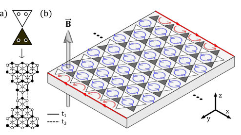
<figcaption class="paper-figure-caption"><b>Fig 1.</b> FIG. 1. Schematics of a triangulene ribbon under the influ- ence of an out-of-plane magnetic field. (a) Example of a dimer composed of two orbitals per site accomplished by coupling two [3]triangulenes tip-to-tip. (b) Ribbon configuration with translation invariance in the x-direction, zigzag open bound- aries in the y-direction and out-of-plane magnetic field.</figcaption>
</figure>
<figure class="paper-figure-card">
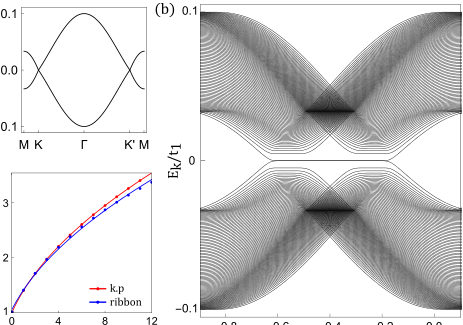
<figcaption class="paper-figure-caption"><b>Fig 2.</b> FIG. 2. Landau level structure of [2, 2]triangulenes. (a) En- ergy bands of the crystal obtained using the reduced TB model, with t3 = 0.1t1. (b) Energy bands of the zigzag rib- bon configuration with Ntd = 100 dimers in the unit cell and magnetic field set to B = 6 T. We notice the presence of a set of Landau levels around each of the two Dirac points. (c) Scaling of the first Landau levels show a √n + 1 behavior both in the numerics (blue) and using the effective mass ap- proximation (red).</figcaption>
</figure>
<figure class="paper-figure-card">
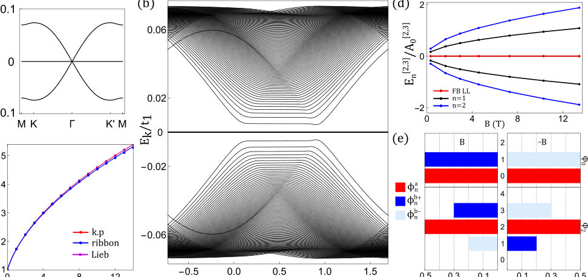
<figcaption class="paper-figure-caption"><b>Fig 3.</b> FIG. 3. Landau level structure of [2, 3]triangulenes. (a) Energy bands of the crystal obtained using the reduced TB model, with t3 = 0.1t1. (b) Energy bands of the zigzag ribbon configuration with Ntd = 100 dimers in the unit cell and magnetic field set to B = 11.4 T. The results feature two sets of Landau levels in the vicinity of the Γ-point. (c) Scaling of the first Landau levels show the √2n + 1 behavior both in the numerics (blue) and using k · p theory (red), analogous to the scaling found in the Lieb model (purple). (d) Behavior of the first Landau levels with external field (B) show no LL spreading of the E = 0 manifold with Ntd subbands. (e) Orbital components for the lowest...</figcaption>
</figure>
<figure class="paper-figure-card">
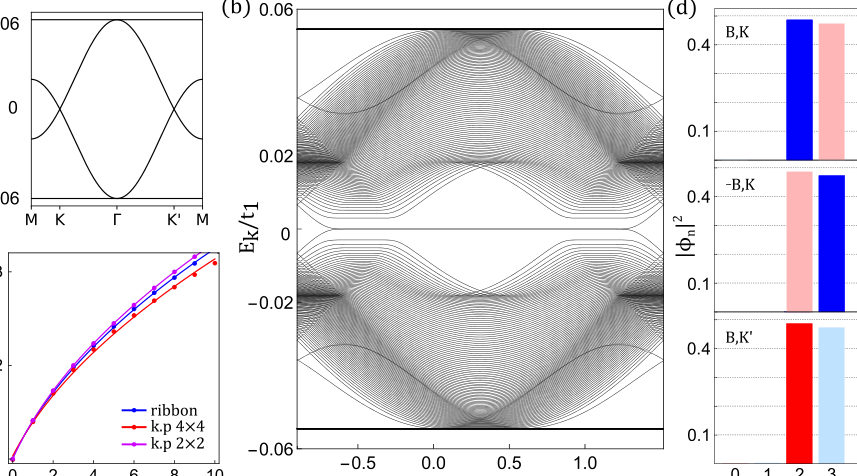
<figcaption class="paper-figure-caption"><b>Fig 4.</b> FIG. 4. Landau level structure of [3, 3]triangulenes. (a) Energy bands of the crystal obtained using the reduced TB model, with t3 = 0.1t1. (b) Energy bands of the zigzag ribbon configuration with Ntd = 100 dimers in the unit cell and magnetic field set to B = 4 T. The results show Landau level structure centered around each Dirac valley and in the vicinity of the quadratic band-crossing points around the Γ-point. (c) Scaling of the first Dirac-Landau levels show the √n + 1 behavior both in the numerics (blue) and using k · p theory on the full Hamiltonian (red) and on the reduced block (purple). (d) Orbital components of the n = 2 eigenstate of the full Landau Hamiltonian at the K (top)...</figcaption>
</figure>
<figure class="paper-figure-card">
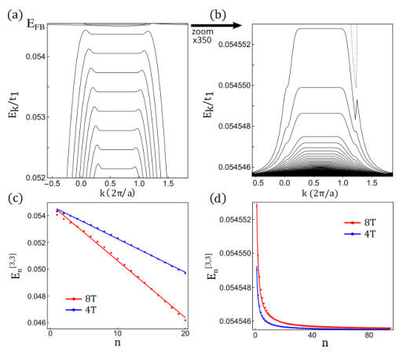
<figcaption class="paper-figure-caption"><b>Fig 5.</b> FIG. 5. Landau quantization of the [3, 3]triangulene at the positive-energy quadratic band crossing point. (a) Close-up on the LL of the dispersive band and (b) zoom on the LL of the flat band for B = 8 T. The dashed curve belongs to an edge state present at zero field. (c) Linear scaling of the dispersive band and (d) inverse-law scaling of the flat band, for B = 8 T (red) and B = 4 T (blue).</figcaption>
</figure>
</div>

<p><strong>Summary.</strong> This theoretical work analyzes how magnetic fields quantize energy levels (Landau levels) in advanced honeycomb lattice models, generalizing graphene to structures with $C_3$ symmetry. The key finding is that the resulting LL spectrum is a hybrid, combining standard Dirac quantization with anomalous quantization dictated by the lattice's singular flat bands. This provides deep insight into the electronic structure of complex 2D crystalline materials.</p>
<p><strong>Why it may be interesting.</strong> The interplay between topological features (flat bands) and magnetic quantization (Landau levels) in lattice models is crucial for understanding novel electronic states in 2D materials, which has implications for quantum materials research.</p>
<details>
<summary>Detailed structure</summary>
<p><strong>Main problem.</strong> The paper investigates the Landau quantization of $C_3$ high-fold fermions within honeycomb lattices, generalizing graphene models to systems with multiple orbitals per site.</p>
<p><strong>Main result.</strong> The Landau level spectrum exhibits a combination of Dirac-type quantization (from linear band crossings) and anomalous quantization stemming from the quantum geometry of singular flat bands.</p>
<p><strong>Method.</strong> The study employs a combination of full tight-binding (TB) theory, reduced TB models based on zero modes, and $k\cdot p$ theory, incorporating the magnetic field via Peierls substitution.</p>
<p><strong>Model / system.</strong> The system models are generalizations of graphene to honeycomb lattices with $C_3$ symmetry, relevant for triangulene crystals. Specific models analyzed include $(1, 2)$, $(2, 2)$, and $(3, 3)$ structures.</p>
<p><strong>Key observables.</strong> Landau levels (LLs) energy eigenvalues, Dirac cone crossings, and the scaling behavior of anomalous LLs (e.g., $B/n$ scaling).</p>
<p><strong>Important parameters / regimes.</strong> Magnetic field strength ($B$), magnetic length ($\ell_B$), and the number of orbitals defining the model $(n_a, n_b)$.</p>
<p><strong>Assumptions / limitations.</strong> Assumptions include the validity of the $k\cdot p$ expansion, the use of a specific gauge choice for the magnetic field, and the separation of bulk and edge states in high fields.</p>
<p><strong>Figures summary.</strong> The notes detail explicit equations (e.g., G5, G6, G18) providing the energy eigenvalues for the $[3, 3]$ and $[4, 4]$ triangulene models, showing their asymptotic behavior.</p>
<p><strong>Paper structure.</strong> The paper progresses from general theory (full TB model) to specific, reduced models (zero modes) and utilizes $k\cdot p$ theory to derive effective Hamiltonians for various lattice types (Lieb, $[3, 3]$, $[4, 4]$), culminating in the calculation of quantized LL spectra.</p>
</details>
<details>
<summary>Abstract</summary>
<p>We present the theory of the Landau levels of $C_3$ high-fold fermions in honeycomb lattices. These fermions arise as a generalization of the tight-binding model in a honeycomb lattice with one orbital per site, known to describe graphene, to a family of models with several orbitals per site transforming according to representations of $C_3$, relevant for triangulene two-dimensional crystals. The models are defined by the number of orbitals $n_a$ and $n_b$ at the $a$ and $b$ sites of the unit cell. They feature energy bands that combine flat bands and Dirac cones, that are isomorphic to those of graphene, the Lieb, $p_{xy}$ honeycomb, and the Kagome tight-binding models. Combining tight-binding and $k\cdot p$ methods, here we compute the Landau levels of the $(1,1)$, $(1,2)$, $(2,2)$ and $(3,3)$ models, we compare them to those of the reference models, and we explore the similarities and differences with the Landau levels in graphene. Our findings reveal that the nature of $C_3$ high-fold fermions combine Dirac-type Landau quantization, originating from the linear crossings and associated relativistic band dispersion, with anomalous Landau quantization rooted in the quantum geometry of the singular flat bands.</p>
</details>
<p><sub><a href="#top">↑ back to top</a></sub></p>

<p><a id="paper-2610.20605"></a></p>
<h3 id="nodal-nematic-superconductivity-in-moire-graphene"><a href="http://arxiv.org/abs/2610.20605v1">Nodal nematic superconductivity in moiré graphene</a></h3>
<p><strong>Authors:</strong> Shuwen Sun, Grgur Palle, Kenji Watanabe, Takashi Taniguchi, Rafael M. Fernandes, Pablo Jarillo-Herrero, Jeong Min Park<br>
<strong>Type:</strong> experiment · <strong>Category:</strong> strongly correlated electrons · <strong>PDF:</strong> <a href="https://arxiv.org/pdf/2610.20605v1">https://arxiv.org/pdf/2610.20605v1</a><br>
<strong>Analysis basis:</strong> full PDF text, analyzed in chunks
<strong>Topic relevance:</strong> <code>quantum measurements</code> <strong>2/5</strong></p>
<div class="figure-strip-hint">↔ Scroll figures horizontally</div>
<div class="paper-figures-scroll">
<figure class="paper-figure-card">
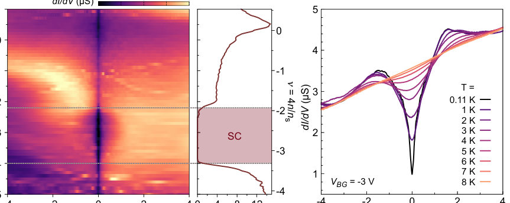
<figcaption class="paper-figure-caption"><b>Fig 1.</b> Figure 1: Characterization of the simultaneous transport and tunneling device. (a) Schematic illustration of the device structure. The magic-angle twisted trilayer graphene (MATTG) is coupled to the graphite finger probe through a trilayer hBN tunnel barrier. The tunneling is restricted to a circular region inside the Hall bar device, defined by an additional hBN spacing layer with a hole. (b) The sequence of each layer in the device. (c) The tunneling conductance dI/dV as a function of interlayer bias voltage Vint and bottom gate voltage VBG at T = 105 mK. (d) Transport resistance Rxx of the MATTG measured as a function of VBG. The zero-resistance region, colored in red, in the transport...</figcaption>
</figure>
<figure class="paper-figure-card">
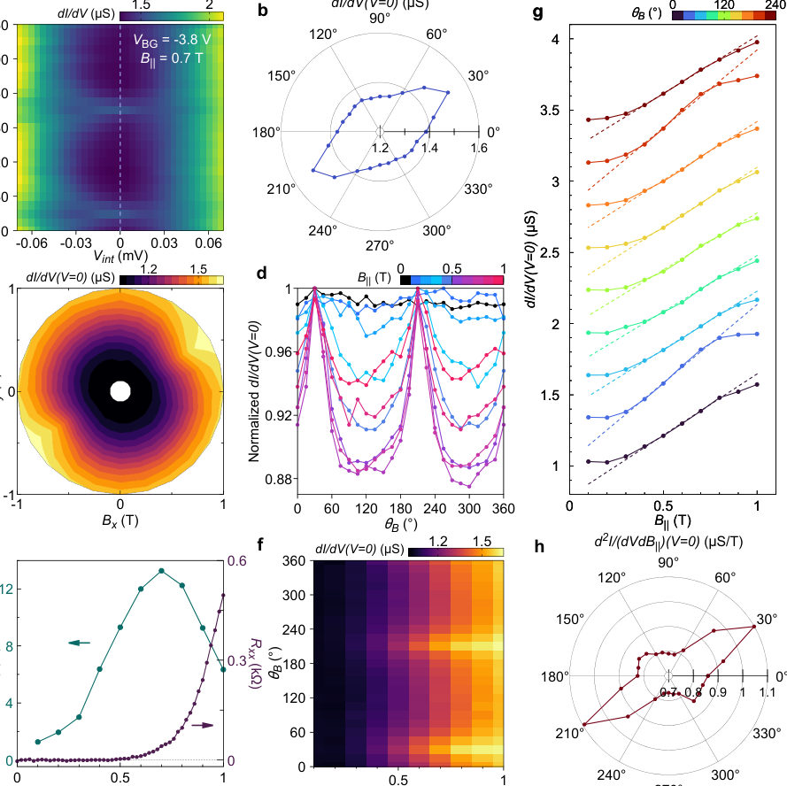
<figcaption class="paper-figure-caption"><b>Fig 2.</b> Figure 2: Tunneling spectroscopy anisotropy. (a) Tunneling conductance dI/dV as a function of Vint and the in-plane magnetic field rotation angle θB at the overdoped side of the superconducting dome VBG = −3.8 V and for the in-plane magnetic field magnitude B∥= 0.7 T. The dashed light purple line tracks Vint = 0 V, around which the tunneling conductance exhibits a clear two-fold anisotropy as a function of θB. (b) Polar plot of the angular-dependent zero-bias tunneling conductance dI/dV (V = 0) as denoted by the dashed line in (a). The radial axis range is chosen to visually emphasize the anisotropy of dI/dV (V = 0), with concentric circles serving as reference markers. (c) Polar map of the...</figcaption>
</figure>
<figure class="paper-figure-card">
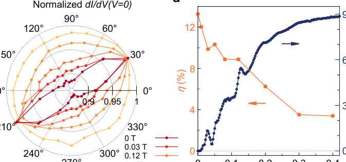
<figcaption class="paper-figure-caption"><b>Fig 3.</b> Figure 3: Temperature and perpendicular magnetic field dependence of the tunneling conductance anisotropy. (a) Polar plot of the normalized angular-dependent dI/dV (V = 0) under various tempera- tures at VBG = −3.8 V and B∥= 0.7 T. (b) Temperature dependence of the anisotropy ratio η (light blue, left axis), extracted from (a), reveals that the anisotropy decreases continuously with increasing tempera- ture, while Rxx measured at B∥= 0.7 T is shown for comparison (dark purple, right axis). η becomes nearly zero around the onset superconducting temperature Tonset = 0.84 K, which marks the full suppression of superconductivity and recovery of the normal-state resistance. (c) Polar plot of the...</figcaption>
</figure>
<figure class="paper-figure-card">
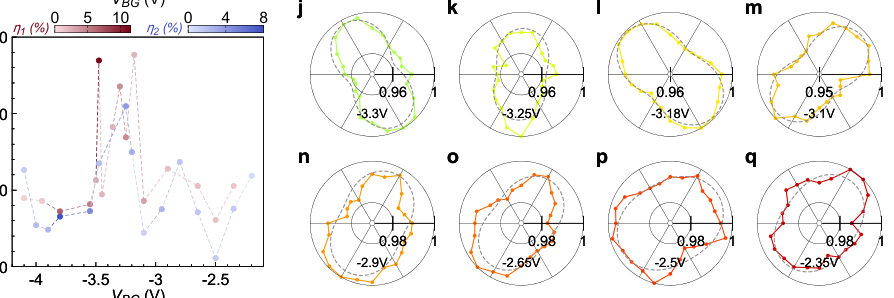
<figcaption class="paper-figure-caption"><b>Fig 4.</b> Figure 4: Gate-tunable tunneling conductance anisotropy across the superconducting dome. (a) Rxx as a function of VBG and T in the hole-doped superconducting regime. (b-q) Polar plots of the normalized dI/dV (V = 0) as a function of θB across the hole-doped superconducting dome, measured at T = 300 mK and B∥= 0.7 T. The gray dashed lines represent fits using an ellipse function (see Methods). The radial axis range in each polar plot is individually chosen to reflect the varying magnitudes of anisotropy at different doping levels, with the concentric circles serving as reference markers for the radial axis. Note that the peanut appearance of the curve is related to the selected radial axis...</figcaption>
</figure>
<figure class="paper-figure-card">

<figcaption class="paper-figure-caption"><b>Fig 5.</b> Figure 4a presents the 2D map of Rxx as a function of VBG and T, centered around the hole-doped</figcaption>
</figure>
</div>

<p><strong>Summary.</strong> This work reports the experimental discovery of a nodal nematic superconducting state in magic-angle twisted trilayer graphene. By measuring the angular dependence of the superconducting gap via tunneling spectroscopy, the authors observe a characteristic two-fold anisotropy. This finding establishes moiré graphene as a tunable platform for studying unconventional, symmetry-breaking superconductivity.</p>
<p><strong>Why it may be interesting.</strong> The direct experimental measurement of symmetry breaking in the superconducting gap structure provides a concrete platform for testing theoretical models of unconventional pairing symmetries in 2D correlated electron systems.</p>
<details>
<summary>Detailed structure</summary>
<p><strong>Main problem.</strong> The paper reports the experimental realization and identification of an intrinsic multi-component nodal nematic superconducting state in magic-angle twisted trilayer graphene (MATTG).</p>
<p><strong>Main result.</strong> The observation of a pronounced, field-tunable two-fold anisotropy in the zero-bias tunneling conductance, which rotates across the superconducting dome, confirms the existence of a nodal nematic superconducting state.</p>
<p><strong>Method.</strong> The study integrates tunneling spectroscopy and quantum transport measurements to directly probe the symmetry of low-energy superconducting quasiparticles.</p>
<p><strong>Model / system.</strong> The physical system is Magic-angle twisted trilayer graphene (MATTG), a moiré superlattice known for hosting unconventional superconductivity. The analysis focuses on probing the symmetry breaking in the superconducting state.</p>
<p><strong>Key observables.</strong> Zero-bias tunneling conductance (dI/dV) under an in-plane magnetic field, anisotropy ratio ($\eta$), and temperature/field dependence of these measurements.</p>
<p><strong>Important parameters / regimes.</strong> Low-energy superconducting gap ($\sim 0.1$ meV), in-plane magnetic field ($B_{\|}$), temperature ($T$), and doping/gate voltage ($V_{	ext{BG}}$).</p>
<p><strong>Assumptions / limitations.</strong> The analysis relies on the assumption that the observed anisotropy is intrinsically linked to the superconducting pairing symmetry, and that the dominant symmetry breaking is related to the in-plane d-vector.</p>
<p><strong>Figures summary.</strong> Figures show device characterization (transport/tunneling), the angular dependence of the zero-bias conductance revealing two-fold anisotropy, and the suppression of this anisotropy with increasing temperature or perpendicular magnetic field.</p>
<p><strong>Paper structure.</strong> The paper proceeds by characterizing the superconducting state using transport and tunneling measurements, identifying the two-fold anisotropy as a key signature, and then theoretically linking this signature to a nodal nematic pairing symmetry.</p>
</details>
<details>
<summary>Abstract</summary>
<p>Unconventional superconductivity can emerge in various forms in strongly correlated systems. Historically, the most extensively studied examples include nodal and triplet pairing, which were experimentally detected in cuprates and superfluid helium-3, respectively. Beyond these canonical cases, there are also nematic superconductors, in which the rotational symmetry of the lattice is broken in the superconducting state. While there are several examples of nematic superconductors whose pairing emerges inside a preexisting nematic normal state, experimental evidence for superconducting states that intrinsically break rotational symmetry on their own has been exceedingly scarce. Here, we report the experimental realization and identification of an intrinsic multi-component nodal nematic superconducting state in magic-angle twisted trilayer graphene (MATTG). By integrating tunneling spectroscopy with quantum transport measurements, we directly probe the symmetry of low-energy superconducting quasiparticles. Deep inside the superconducting state, we observe a pronounced two-fold anisotropy in the zero-bias tunneling conductance under an in-plane magnetic field, which is strongly suppressed together with superconductivity as the temperature or perpendicular magnetic field is increased. Remarkably, the major axis of anisotropy rotates by up to $90^{\circ}$ across the superconducting dome, indicating an intrinsic, field- and density-tunable symmetry of the low-energy excitations. These behaviors imply a nodal superconducting state in MATTG that spontaneously breaks the six-fold rotational symmetry of the moiré superlattice. Our results establish moiré graphene as a versatile platform for realizing and interrogating nodal nematic superconductivity, opening a new avenue for exploring unconventional symmetry-breaking superconducting states in two-dimensional materials.</p>
</details>
<p><sub><a href="#top">↑ back to top</a></sub></p>

<p><a id="paper-2610.19017"></a></p>
<h3 id="topological-superconductivity-in-layered-d-wave-altermagnetic-metals"><a href="http://arxiv.org/abs/2610.19017v1">Topological superconductivity in layered d-wave altermagnetic metals</a></h3>
<p><strong>Authors:</strong> Yijie Mo, Zhongbo Yan<br>
<strong>Type:</strong> theory · <strong>Category:</strong> other · <strong>PDF:</strong> <a href="https://arxiv.org/pdf/2610.19017v1">https://arxiv.org/pdf/2610.19017v1</a><br>
<strong>Analysis basis:</strong> full PDF text, analyzed in chunks
<strong>Topic relevance:</strong> <code>analog quantum simulation</code> <strong>2/5</strong></p>
<div class="figure-strip-hint">↔ Scroll figures horizontally</div>
<div class="paper-figures-scroll">
<figure class="paper-figure-card">
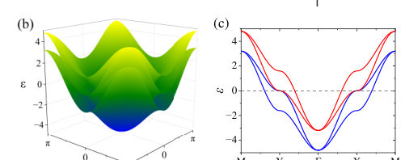
<figcaption class="paper-figure-caption"><b>Fig 1.</b> FIG. 1. (a) Schematic of the bilayer superconducting d-wave alter- magnetic metal (left) and the corresponding Brillouin zone (right), with the four time-reversal-invariant momenta highlighted. Normal- state energy spectra (b) in the whole Brillouin zone and (c) along high symmetry lines. The red and blue solid lines in (c) correspond to the σx = 1 and σx = −1 sectors, respectively, while the black dashed line indicates the Fermi level. The parameters are t = 1, η = 0.8, λso = 0, and tAM = 0.2.</figcaption>
</figure>
<figure class="paper-figure-card">
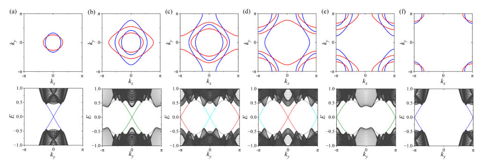
<figcaption class="paper-figure-caption"><b>Fig 2.</b> FIG. 2. Upper panels: Fermi-surface configurations of the normal states. The red and blue colors denote the spin polarizations ⟨sz⟩= 1 and −1 on the Fermi-surface segments, respectively. Lower panels: Energy spectra of the corresponding superconducting phases under open (periodic) boundary conditions in the x (y) direction, with pairing amplitude ∆p = 0.3. The red, blue, cyan and green solid lines represent nondegenerate, doubly degenerate, triple degenerate and quadruple degenerate edge states, respectively. (a) µ = −4, (b) µ = −2, (c) µ = −1, (d) µ = 1, (e) µ = 2, and (f) µ = 4. Common parameters are t = 1, η = 0.8, λso = 0, and tAM = 0.2.</figcaption>
</figure>
<figure class="paper-figure-card">
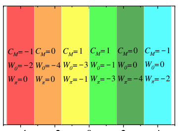
<figcaption class="paper-figure-caption"><b>Fig 3.</b> FIG. 3. Topological phase diagram as a function of µ. Parameters are chosen as t = 1, η = 0.8, λso = 0, ∆p = 0.3 and tAM = 0.2.</figcaption>
</figure>
<figure class="paper-figure-card">
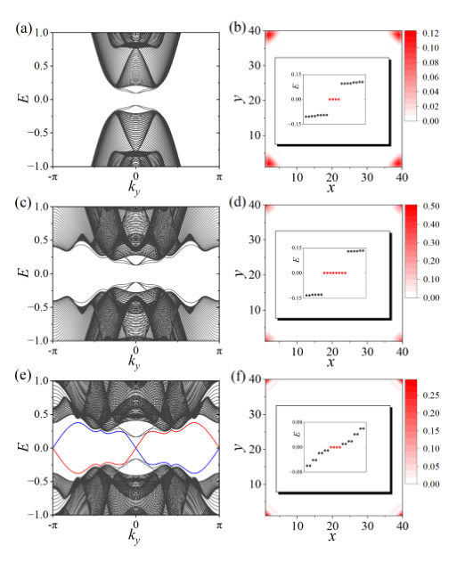
<figcaption class="paper-figure-caption"><b>Fig 4.</b> FIG. 4. Left panels: Energy spectra for the bilayer system under open (periodic) boundary conditions in the x (y) direction. Right panels: Probability density profiles of Majorana corner modes for the system under open boundary conditions in both the x and y direc- tions. The red and blue solid lines in (e) represent the midgap states on the left and right edges, respectively. In (a) and (b) µ = −4, in (c) and (d) µ = −2, in (e) and (f) µ = −1. Common parameters are t = 1, η = 0.8, λso = 0.2, ∆p = 0.3, and tAM = 0.2.</figcaption>
</figure>
<figure class="paper-figure-card">
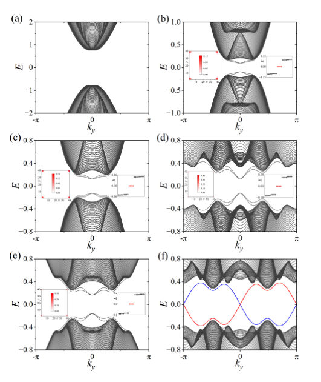
<figcaption class="paper-figure-caption"><b>Fig 5.</b> FIG. 5. Energy spectra under open (periodic) boundary conditions in the x (y) direction. Left panels: LB = 1 sector. Right panels: LB = −1 sector. Insets show the probability density profiles of the Majorana corner modes in the LB sectors when both x and y directions take open boundary conditions. The red and blue solid lines in (f) represent the midgap states on the left and right edges, respectively. In (a) and (b) µ = −4, in (c) and (d) µ = −2, in (e) and (f) µ = −1. Common parameters are t = 1, η = 0.8, λso = 0.2, ∆p = 0.3, and tAM = 0.2.</figcaption>
</figure>
</div>

<p><strong>Summary.</strong> This work theoretically explores how topological superconductivity can be engineered in layered altermagnetic metals by controlling the interplay between layer structure, odd-parity pairing, and spin-orbit coupling. The authors demonstrate that these systems host tunable higher-order topological phases, characterized by specific Majorana edge and corner modes. This provides a robust theoretical framework for designing novel superconducting quantum materials.</p>
<p><strong>Why it may be interesting.</strong> The explicit connection between magnetic order (altermagnetism), pairing symmetry (odd-parity), and topological superconductivity provides a concrete, material-based platform for realizing exotic superconducting states relevant to quantum materials research.</p>
<details>
<summary>Detailed structure</summary>
<p><strong>Main problem.</strong> The paper investigates the emergence and control of topological superconductivity in layered d-wave altermagnetic metals.</p>
<p><strong>Main result.</strong> The combination of layer degrees of freedom, odd-parity pairing, and Fermi-surface geometry allows for the engineering of tunable topological phases, including second-order and hybrid-order superconducting states.</p>
<p><strong>Method.</strong> The analysis uses symmetry protection (mirror and chiral symmetry) applied to the Bogoliubov-de Gennes (BdG) Hamiltonian to characterize topological invariants.</p>
<p><strong>Model / system.</strong> The model is a multilayer d-wave altermagnetic metal with odd-parity helical p-wave pairing, analyzed via the BdG Hamiltonian for a minimal bilayer system, which is later generalized to N layers.</p>
<p><strong>Key observables.</strong> Mirror Chern number, winding numbers, gapless Majorana edge modes, and Majorana corner modes.</p>
<p><strong>Important parameters / regimes.</strong> Interlayer tunneling ($\eta$), Rashba spin-orbit coupling ($\lambda_{so}$), and the chemical potential ($\mu$).</p>
<p><strong>Assumptions / limitations.</strong> The analysis focuses on the spin-triplet pairing component and neglects even-parity spin-singlet components.</p>
<p><strong>Figures summary.</strong> The figures illustrate the evolution of Fermi-surface configurations under varying chemical potentials, linking specific topological invariants ($C_M$) to the predicted number and type of Majorana edge states.</p>
<p><strong>Paper structure.</strong> The paper progresses from analyzing the minimal bilayer model and its first-order topological phases, to detailing the emergence of second- and hybrid-order phases, and finally generalizing the findings to an arbitrary N-layer system based on a layer symmetry.</p>
</details>
<details>
<summary>Abstract</summary>
<p>We investigate multilayer d-wave altermagnetic metals with odd-parity helical p-wave pairing. In the minimal bilayer system, interlayer tunneling reconstructs the spin-split Fermi surfaces and generates two layer-hybridized sectors with distinct effective chemical potentials. Without Rashba spin-orbit coupling (RSOC), the emergent mirror symmetry and subsystem chiral symmetry stabilize phases with different numbers of helical Majorana edge-mode pairs and additional counterpropagating pairs, jointly characterized by the mirror Chern number and the winding numbers defined along high-symmetry lines. The combination of RSOC and the altermagnetic exchange field gaps out the helical Majorana pairs while, in a certain parameter regime, leaving another pair of counterpropagating Majorana edge modes gapless, giving rise to second-order topological phases with isolated or twofold Majorana corner modes, as well as a hybrid-order phase in which gapless Majorana edge modes coexist with Majorana corner modes. We identify a layer symmetry that elucidates the physical origin of these phases. For an arbitrary N-layer system, such a symmetry naturally arises from the interlayer-coupling matrix, allowing N-fold Majorana corner modes to emerge when all layer-hybridized sectors enter the nontrivial second-order regime. Our results establish the interplay among the layer degree of freedom, odd-parity pairing, and Fermi-surface configurations as a controllable route to engineering topological superconductivity in layered altermagnetic systems.</p>
</details>
<p><sub><a href="#top">↑ back to top</a></sub></p>

<p><a id="paper-2610.19284"></a></p>
<h3 id="chern-insulator-optics"><a href="http://arxiv.org/abs/2610.19284v1">Chern insulator optics</a></h3>
<p><strong>Authors:</strong> Jason G. Kattan, J. E. Sipe<br>
<strong>Type:</strong> theory · <strong>Category:</strong> other · <strong>PDF:</strong> <a href="https://arxiv.org/pdf/2610.19284v1">https://arxiv.org/pdf/2610.19284v1</a><br>
<strong>Analysis basis:</strong> full PDF text, analyzed in chunks
<strong>Topic relevance:</strong> <code>Keldysh / 2PI / non-Gaussian methods</code> <strong>1/5</strong> · <code>analog quantum simulation</code> <strong>1/5</strong> · <code>interference shaping light</code> <strong>1/5</strong> · <code>methods for driven-dissipative</code> <strong>1/5</strong></p>
<div class="figure-strip-hint">↔ Scroll figures horizontally</div>
<div class="paper-figures-scroll">
<figure class="paper-figure-card">
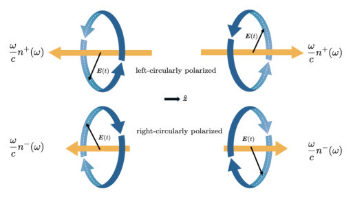
<figcaption class="paper-figure-caption"><b>Fig 1.</b> FIG. 1. The refractive indices in natural optical activity do not depend on the direction of propagation, but only on the polarization.</figcaption>
</figure>
<figure class="paper-figure-card">
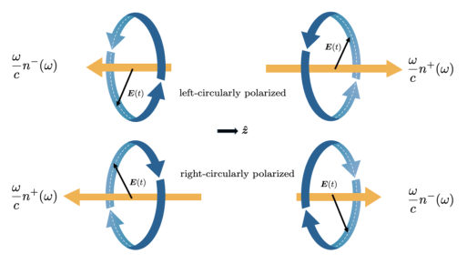
<figcaption class="paper-figure-caption"><b>Fig 2.</b> FIG. 2. The refractive indices in “unnatural” optical activity depend on both the direction of propagation and the polar- ization. The diagrams are drawn for ν &gt; 0, and in drawing them we have assumed that both n+(ω) and n−(ω) are real.</figcaption>
</figure>
<figure class="paper-figure-card">
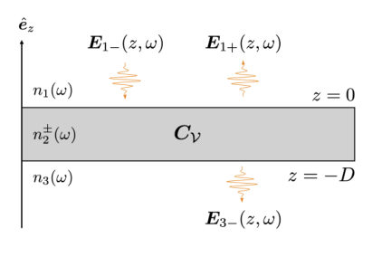
<figcaption class="paper-figure-caption"><b>Fig 3.</b> FIG. 3. Here we consider a three-dimensional Chern insulator of finite thickness D &gt; 0 with Chern vector (18), where the regions z &gt; 0 and z &lt; 0 are isotropic media with indices of refraction n1(ω) and n3(ω), respectively. The transmitted field is E3−(z, ω) and the reflected field is E1+(z, ω) with circular polarization components for which the propagation thereof is described by the bulk refractive indices n± 2 (ω) for the Chern insulator.</figcaption>
</figure>
</div>

<p><strong>Summary.</strong> This theoretical work demonstrates that Chern insulators exhibit unique optical activity directly linked to their topological invariants, unlike conventional chiral media. By analyzing transmission and reflection at interfaces, the authors predict that the sign difference in Chern numbers can lead to perfect reflection, offering a robust optical signature for topological materials.</p>
<p><strong>Why it may be interesting.</strong> The direct link established between a topological invariant (Chern number) and a measurable optical property (Faraday/Kerr rotation) provides a powerful, non-invasive diagnostic tool for characterizing topological phases of matter, which is highly relevant to quantum optics and condensed matter theory.</p>
<details>
<summary>Detailed structure</summary>
<p><strong>Main problem.</strong> The paper investigates the unique, long-wavelength optical activity of Chern insulators, which arises fundamentally differently from natural optical activity.</p>
<p><strong>Main result.</strong> The study predicts that the optical rotation in Chern insulators is a direct, measurable signature of their non-trivial topology, and that interfaces between Chern insulators can act as perfect mirrors when their Chern invariants have opposite signs.</p>
<p><strong>Method.</strong> The authors use linear response theory, deriving conductivity and dielectric tensors from a microscopic Hamiltonian, and then apply transfer matrix methods to analyze transmission and reflection at interfaces.</p>
<p><strong>Model / system.</strong> The system is the Chern insulator, a topological band insulator characterized by a Chern number. The analysis models both bulk structures and more realistic two-dimensional current sheets, such as those found in $\text{MnBi}_2\text{Te}_4$.</p>
<p><strong>Key observables.</strong> Faraday and Kerr angles (optical rotations), normal-incidence transmission ($T_{12}$) and reflection ($R_{12}$) coefficients, and time-averaged Poynting power fluxes ($\mathbf{S}_{L1-\omega}, \mathbf{S}_{R1-\omega}$).</p>
<p><strong>Important parameters / regimes.</strong> The analysis is performed in the long-wavelength limit ($\omega \to 0$) and the transparency regime (frequencies below the bandgap). The Chern invariants ($C_V$) are crucial parameters.</p>
<p><strong>Assumptions / limitations.</strong> The calculations rely on the independent-particle approximation (Hartree level) and assume the long-wavelength limit for the optical response.</p>
<p><strong>Figures summary.</strong> The figures likely illustrate the derived Fresnel coefficients and the final power transmission and reflection coefficients ($T_{12}, R_{12}$) for the four combinations of signs for the Chern projections ($C_{z1}, C_{z2}$), demonstrating the perfect reflection case.</p>
<p><strong>Paper structure.</strong> The paper progresses from establishing the theoretical framework using field theory and conductivity tensors (incorporating topological terms) to applying this theory to calculate boundary conditions and power fluxes at interfaces between Chern insulators.</p>
</details>
<details>
<summary>Abstract</summary>
<p>Chern insulators have optical properties that are strikingly different than ordinary chiral media. Unlike the natural optical activity of the latter, which is a finite-wavelength effect arising from spatial dispersion, the optical activity of a Chern insulator is already present in the long-wavelength limit, and exhibits a striking directional asymmetry in the propagation of circularly polarized light. We study this unnatural optical activity using a recently developed field theory for Chern insulators. For bulk Chern insulators, we derive the normal-incidence transmission and reflection coefficients of multilayer structures, identify the associated Faraday and Kerr angles, and show that these optical rotations provide a direct optical signature of topology at low frequencies. We also show that an interface between bulk Chern insulators can act as a kind of mirror, completely reflecting light at normal incidence when the Chern invariants have opposite signs. Moving to a more realistic model of a two-dimensional current sheet, we study the Faraday and Kerr effects in a thin film of $\mathrm{Mn}\mathrm{Bi}_2\mathrm{Te}_4$ in its Chern insulator phase. The predicted rotations are many orders of magnitude larger than those of optically active media of comparable thickness that are topologically trivial.</p>
</details>
<p><sub><a href="#top">↑ back to top</a></sub></p>

<p><a id="paper-2610.19582"></a></p>
<h3 id="magnetic-proximity-beyond-the-interface-layer-sequence-dependent-exchange-in-wsemath1160mathcrimath1161math-heterostructures"><a href="http://arxiv.org/abs/2610.19582v1">Magnetic proximity beyond the interface: Layer-sequence-dependent exchange in WSe$_2$/CrI$_3$ heterostructures</a></h3>
<p><strong>Authors:</strong> Natalie Kuhn, Marc Schütte, Joachim Emming, Felix Hellenkamp, Leo Dreyer, Frank Volmer, Kenji Watanabe, Takashi Taniguchi, Lutz Waldecker, Christoph Stampfer, Bernd Beschoten<br>
<strong>Type:</strong> experiment · <strong>Category:</strong> other · <strong>PDF:</strong> <a href="https://arxiv.org/pdf/2610.19582v1">https://arxiv.org/pdf/2610.19582v1</a><br>
<strong>Analysis basis:</strong> full PDF text, analyzed in chunks
<strong>Topic relevance:</strong> <code>QC/QI experiment</code> <strong>1/5</strong> · <code>analog quantum simulation</code> <strong>1/5</strong> · <code>quantum measurements</code> <strong>1/5</strong> · <code>quantum optics experiment</code> <strong>1/5</strong></p>
<div class="figure-strip-hint">↔ Scroll figures horizontally</div>
<div class="paper-figures-scroll">
<figure class="paper-figure-card">
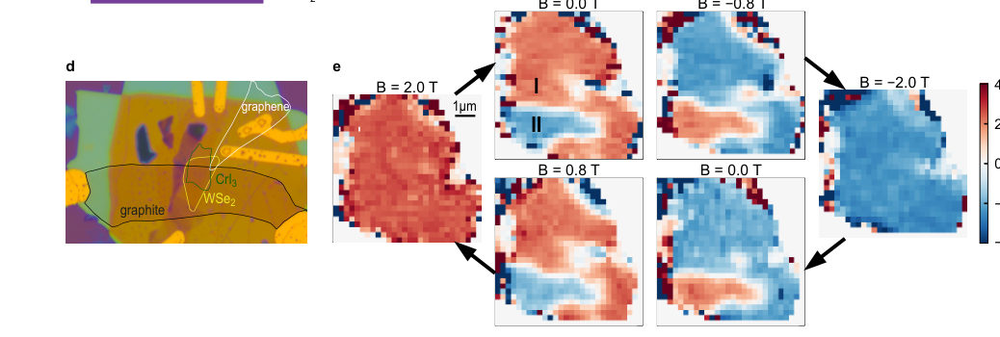
<figcaption class="paper-figure-caption"><b>Fig 1.</b> FIG. 1. Device structure and spatially-resolved magnetic proximity effects. a Schematic cross-section of a gate-tunable WSe2/trilayer CrI3 heterostructure, fully encapsulated in hBN. A few-layer graphite backgate and a graphene contact to WSe2 enable electrostatic doping. b Helicity resolved reflection contrast at representative back gate voltages measured in region I, see panel (e). The positively charged trion (X+) is especially prominent at negative gate voltages and vanishes at Vg =5 V. The energy difference between the two light helicities of the neutral exciton (X0) defines the proximity-induced valley splitting ∆E of the WSe2. c Schematic band alignment of the WSe2/CrI3...</figcaption>
</figure>
<figure class="paper-figure-card">
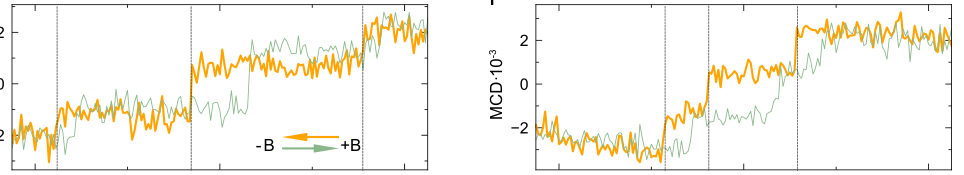
<figcaption class="paper-figure-caption"><b>Fig 2.</b> FIG. 2. Reconstruction of layer-resolved magnetic configurations. a,b Magnetic field hysteresis of the proximity-induced neutral-exciton valley splitting ∆E in WSe2 for the AFM domain (region I) and the mixed AFM/FM domain (region II), respectively. Orange and green traces correspond to the two magnetic-field sweep directions, as indicated by the arrows. Region I shows a single reversal, whereas region II shows three sign reversals. c,d Reconstructed layer-resolved magnetic configurations of the heterostructure for the two regions. Plus and minus signs denote the sign of the WSe2 valley splitting, while red upward and blue downward arrows indicate the out-of-plane magnetization direction of...</figcaption>
</figure>
<figure class="paper-figure-card">
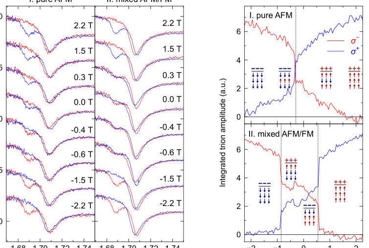
<figcaption class="paper-figure-caption"><b>Fig 3.</b> FIG. 3. Different trion response in the two distinct magnetic domains. a Helicity-resolved RC spectra of WSe2 at selected magnetic fields during the magnetic field down-sweep of the AFM domain and the mixed AFM/FM domain, measured at a gate voltage of Vg =−5 V. In the AFM domain, the positive trion X+ is only dominant in one of the two light helicities, whereas it is almost absent in the other. The helicity, in which the feature can be observed, switches when the interfacial CrI3 layer reverses. Instead, in the mixed domain, the trion becomes visible in both helicities in the intermediate magnetic field regime (see e.g. curve at −0.4 T). b Integrated trion amplitudes for σ+ and...</figcaption>
</figure>
</div>

<p><strong>Summary.</strong> This research investigates magnetic proximity effects in WSe2/CrI3 heterostructures, finding that the electronic response is not solely dictated by the interface magnetization. By comparing neutral exciton and trion spectroscopy across different magnetic domains, the authors demonstrate that the trion signal is sensitive to the full, layer-resolved magnetic sequence within the CrI3 stack, revealing magnetic coupling beyond the immediate interface.</p>
<p><strong>Why it may be interesting.</strong> This work provides experimental evidence for magnetic coupling mechanisms in 2D heterostructures that depend on the stacking order of magnetic layers, which is crucial for designing next-generation spintronic and quantum computing components.</p>
<details>
<summary>Detailed structure</summary>
<p><strong>Main problem.</strong> To determine if the magnetic proximity effect in WSe2/CrI3 heterostructures depends only on the magnetization of the interface or on the full, layer-resolved magnetic sequence of the adjacent magnetic layer.</p>
<p><strong>Main result.</strong> The response of charged excitons (trions) is sensitive to the full layer-resolved magnetic sequence of the CrI3 trilayer, revealing magnetic proximity effects that extend beyond the immediate interface, unlike the neutral exciton splitting.</p>
<p><strong>Method.</strong> The study combines spatially and helicity-resolved spectroscopy (for neutral excitons and trions) with magnetic circular dichroism (MCD) to probe the magnetic domains and electronic response.</p>
<p><strong>Model / system.</strong> The system is a gate-tunable van der Waals heterostructure consisting of monolayer WSe2 coupled with a trilayer of CrI3. The magnetic state of the CrI3 is characterized by distinct domains exhibiting purely AFM or mixed AFM/FM interlayer coupling.</p>
<p><strong>Key observables.</strong> Neutral-exciton valley splitting (Delta E), helicity-resolved positive-trion resonance ($  ext{X}^+$), and the magnetic hysteresis loops derived from MCD measurements.</p>
<p><strong>Important parameters / regimes.</strong> Gate voltage ($V_g$) for hole doping, magnetic field ($B$), and the specific magnetic coupling sequence (AFM vs. mixed AFM/FM) within the CrI3 stack.</p>
<p><strong>Assumptions / limitations.</strong> The analysis assumes that the observed electronic response (especially the trion) can be mapped to the underlying magnetic configuration of the multilayer stack.</p>
<p><strong>Figures summary.</strong> Figures show spatial maps of exciton splitting, hysteresis loops for both neutral exciton splitting and MCD signals, and reconstructed layer-resolved magnetic configurations for the two identified magnetic domains.</p>
<p><strong>Paper structure.</strong> The paper first establishes the physical system and the limitations of simple interfacial models. It then uses spectroscopy to map out two distinct magnetic domains in the CrI3, characterizing their magnetic coupling. Finally, it contrasts the response of neutral excitons versus trions to demonstrate the layer-dependent magnetic proximity effect.</p>
</details>
<details>
<summary>Abstract</summary>
<p>Magnetic proximity effects in transition metal dichalcogenide (TMD)/2D-magnet heterostructures are often described in terms of the magnetization of the interfacial magnetic layer. Here, we show that this picture is sufficient to describe the neutral-exciton valley splitting of the TMD, but incomplete for its hole-doped electronic structure. We study a gate-tunable van der Waals heterostructure composed of monolayer WSe$_2$ in direct contact with trilayer CrI$_3$. By combining spatially and helicity-resolved reflection-contrast spectroscopy with magnetic circular dichroism, we identify two distinct magnetic domains in the trilayer CrI$_3$: one with purely antiferromagnetic interlayer coupling and one with a mixed antiferromagnetic (AFM)/ferromagnetic~(FM) coupling. In both domains, the sign of the neutral-exciton valley splitting of WSe$_2$ switches with the magnetization reversal of the adjacent CrI$_3$ layer. In contrast, helicity-resolved positive-trion spectroscopy of WSe$_2$ reveals a qualitatively different response. While the AFM domain shows a strongly helicity-selective trion resonance, the mixed AFM/FM domain exhibits trion resonances in both helicities. This behavior disappears when all CrI$_3$ layers are aligned in a parallel magnetization direction. Our results demonstrate that charged excitons are sensitive to the full layer-resolved magnetic sequence of the adjacent 2D-magnet, revealing magnetic proximity beyond the interface.</p>
</details>
<p><sub><a href="#top">↑ back to top</a></sub></p>

<p><a id="paper-2610.20455"></a></p>
<h3 id="magnetic-susceptibility-of-superconducting-films-in-the-meissner-london-regime"><a href="http://arxiv.org/abs/2610.20455v1">Magnetic Susceptibility of Superconducting Films in the Meissner-London Regime</a></h3>
<p><strong>Authors:</strong> Ruslan Prozorov<br>
<strong>Type:</strong> theory · <strong>Category:</strong> other · <strong>PDF:</strong> <a href="https://arxiv.org/pdf/2610.20455v1">https://arxiv.org/pdf/2610.20455v1</a><br>
<strong>Analysis basis:</strong> full PDF text, analyzed in chunks
<strong>Topic relevance:</strong> <code>Keldysh / 2PI / non-Gaussian methods</code> <strong>1/5</strong> · <code>methods for driven-dissipative</code> <strong>1/5</strong></p>
<div class="figure-strip-hint">↔ Scroll figures horizontally</div>
<div class="paper-figures-scroll">
<figure class="paper-figure-card">
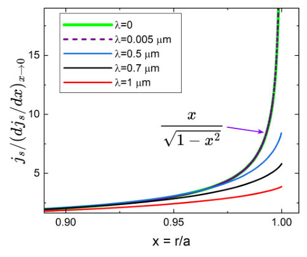
<figcaption class="paper-figure-caption"><b>Fig 1.</b> FIG. 2. Thickness-integrated sheet current density, js(x), normalized by the central slope of the ideal profile, (djs/dx)x→0 = 4H/π, as a function of x = r/a near the rim of a d = 10 nm, a = 3 mm disc; the curves end at x = 0.9999. For λ →0 (λ = 0.005 µm, dashed curve), the numerical solution coincides with the exact 2D ideal-screening profile x/ √</figcaption>
</figure>
<figure class="paper-figure-card">
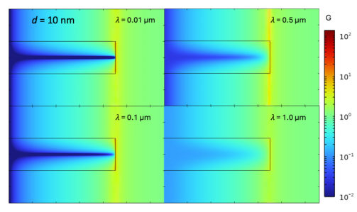
<figcaption class="paper-figure-caption"><b>Fig 2.</b> FIG. 1. Cross-sectional distribution of the z-component of the magnetic induction, Bz (in G, for an applied field µ0H = 1 G), near the rim of a d = 10 nm, a = 3 mm superconducting disc for four values of the London penetration depth λ indicated in the panels. To visually resolve the distribution across the thickness, the vertical z-axis is stretched by a factor of 105</figcaption>
</figure>
<figure class="paper-figure-card">

<figcaption class="paper-figure-caption"><b>Fig 3.</b> Figure 1 shows the cross-sectional distribution of axial magnetic induction Bz(r, z) in a thin film (d = 10 nm, a = 3 mm) for four values of the London penetration</figcaption>
</figure>
<figure class="paper-figure-card">
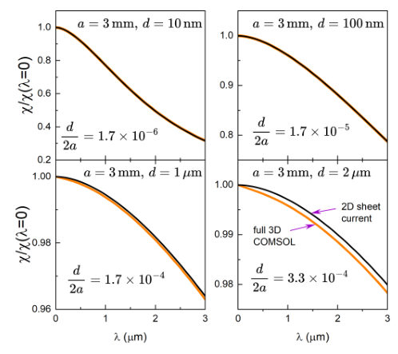
<figcaption class="paper-figure-caption"><b>Fig 4.</b> FIG. 3. Normalized susceptibility χ/χ(λ = 0) of a disc with a = 3 mm as a function of λ: pure 2D sheet-current model with Λ = 2λ2/d (black curves) vs. full 3D finite-element solution (COMSOL, orange curves) for d = 10 nm, 100 nm, 1 µm, and 2 µm (δ = d/(2a) = 1.7 × 10−6 to 3.3 × 10−4).</figcaption>
</figure>
</div>

<p><strong>Summary.</strong> This paper addresses the challenge of extracting the intrinsic London penetration depth from measured magnetic susceptibility in superconducting thin films. The authors provide a highly accurate, closed-form semi-empirical formula for the susceptibility by modeling the system using a 2D sheet-current approximation. This work is crucial for superconducting electronics as it offers a reliable method to analyze real-world sample geometries, including rectangles.</p>
<p><strong>Why it may be interesting.</strong> While focused on superconductivity, the rigorous development of an effective 2D model from a complex 3D electrodynamic problem, coupled with the creation of a robust calibration protocol, showcases advanced techniques in modeling boundary-value problems relevant to quantum interfaces.</p>
<details>
<summary>Detailed structure</summary>
<p><strong>Main problem.</strong> The primary goal is to develop an accurate, closed-form analytical representation for the magnetic susceptibility, $\chi(T)$, of superconducting thin films in the Meissner-London regime.</p>
<p><strong>Main result.</strong> The authors provide a closed-form expression for $\chi(\lambda)$ for disc geometries, valid for small aspect ratios ($\delta \le 0.05$), and also derive an empirical mapping to calculate the response for rectangular samples.</p>
<p><strong>Method.</strong> The methodology involves deriving the susceptibility from the London free energy functional, solving the resulting integral equation using a 2D sheet-current model, and validating the resulting semi-empirical fit against independent full 3D numerical solutions (FEM and integral equation solvers).</p>
<p><strong>Model / system.</strong> The system is a superconducting platelet (thin film) subjected to a perpendicular magnetic field, analyzed in the vortex-free Meissner-London state. The model transitions from full 3D electrodynamics to a 2D sheet-current approximation for simplification.</p>
<p><strong>Key observables.</strong> Magnetic susceptibility $\chi(T)$, London penetration depth $\lambda(T)$, and the superfluid phase stiffness.</p>
<p><strong>Important parameters / regimes.</strong> Aspect ratio $\delta = d/(2a)$, Pearl screening length $\Lambda = 2\lambda^2/d$, and the dimensionless parameter $\epsilon = \Lambda/a$.</p>
<p><strong>Assumptions / limitations.</strong> The analysis relies on the validity of the 2D sheet-current model, which is most accurate for very thin films ($\delta \lesssim 10^{-4}$) and large penetration depths ($\lambda \gtrsim 4d$).</p>
<p><strong>Figures summary.</strong> Figure 1 illustrates the cross-sectional distribution of the axial magnetic induction $B_z(r, z)$ near the rim of a thin disc. Figure 2 compares the numerically computed thickness-integrated sheet current density $j_s(x, \lambda)$ against the analytic 2D ideal-screening profile.</p>
<p><strong>Paper structure.</strong> The paper establishes the physical problem, derives the governing equations (London equations), develops the 2D sheet-current model, presents the closed-form analytical fit validated by 3D numerical methods, and concludes with practical protocols for analyzing various geometries (discs vs. rectangles).</p>
</details>
<details>
<summary>Abstract</summary>
<p>Extracting the London penetration depth, $λ(T)$, from the measured magnetic susceptibility, $χ(T)$, of a superconducting platelet in a perpendicular magnetic field requires knowing the function $χ(λ)$ computed for the actual sample geometry. Thin films are increasingly important in quantum computing and superconducting electronics, most of which operate at ultra-low excitation fields in the vortex-free regime. Understanding their electromagnetic response in the Meissner--London (finite-$λ$, no vortices) state is therefore essential for extracting intrinsic properties such as the London penetration depth and superfluid phase stiffness. While numerous prior works have addressed different aspects of this problem, here we focus on providing an analytical semi-empirical representation of $χ(λ)$ based on the 2D sheet-current model and establishing the limits of its applicability using two independent full 3D numerical solutions: finite-element modeling and a volume-current integral equation. As a result, we provide $χ(λ)$ for a disc of radius $a$ and thickness $d$ in closed form, valid for all $λ$ and for aspect ratios $δ\equiv d/(2a)\le0.05$, and accurate to $0.1\%$. The two-dimensional sheet description with Pearl length $Λ=2λ^2/d$ is adequate for $δ\lesssim10^{-4}$ and $λ\gtrsim 4d$. Thicker films require the full closed form, which includes the three-dimensional corrections. Using the same numerical analysis, we provide an empirical formula that maps rectangular samples---the geometry most commonly used in experiments---onto a disc with an ``effective radius'' for subsequent calculation of $χ(λ)$, and formulate a complete calibration protocol for whole-sample susceptibility measurements.</p>
</details>
<p><sub><a href="#top">↑ back to top</a></sub></p>

<p><a id="paper-2610.19006"></a></p>
<h3 id="nanoscale-mapping-of-strain-engineered-excitons-in-monolayer-wsemath1198math"><a href="http://arxiv.org/abs/2610.19006v1">Nanoscale Mapping of Strain-engineered Excitons in Monolayer WSe$_2$</a></h3>
<p><strong>Authors:</strong> Anna S. Roche, Nicholas V. Proscia, Paul D. Cunningham, Kathleen M. McCreary, Dante J. O'Hara, Hsun Jen Chuang, Cory Cress, Collin Sanborn, Samuel W. LaGasse, Jose J. Fonseca, Jeremy T. Robinson, Takashi Taniguchi, Kenji Watanabe, John R. Schaibley, Brian J. LeRoy<br>
<strong>Type:</strong> experiment · <strong>Category:</strong> other · <strong>PDF:</strong> <a href="https://arxiv.org/pdf/2610.19006v1">https://arxiv.org/pdf/2610.19006v1</a><br>
<strong>Analysis basis:</strong> full PDF text, analyzed in chunks
<strong>Topic relevance:</strong> <code>quantum measurements</code> <strong>1/5</strong> · <code>quantum optics experiment</code> <strong>1/5</strong></p>
<div class="figure-strip-hint">↔ Scroll figures horizontally</div>
<div class="paper-figures-scroll">
<figure class="paper-figure-card">
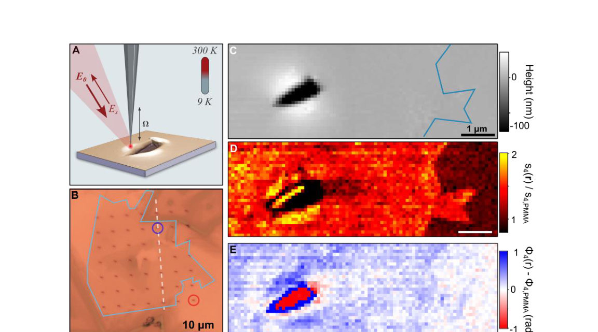
<figcaption class="paper-figure-caption"><b>Fig 1.</b> Figure 1. Near-field measurements of AFM indented WSe₂. A Schematic of the s-SNOM experimental set-up. A tunable visible laser is focused on a metallic AFM tip, operating in tapping mode at frequency Ω, to produce a nanoscale enhanced spot at the tip apex. The near-field spot interacts with the sample below the tip and backscatters to the focusing optic to be sent to a far field detector. The microscope is installed on a cold head and held in an optical cryostat at 9 K. B An optical microscope image of Sample 1 depicting the grid of AFM indentation points across a region of monolayer (blue outline) WSe₂. The white line marks the s-SNOM line-scan path measured in Figure 2. The blue circled...</figcaption>
</figure>
<figure class="paper-figure-card">
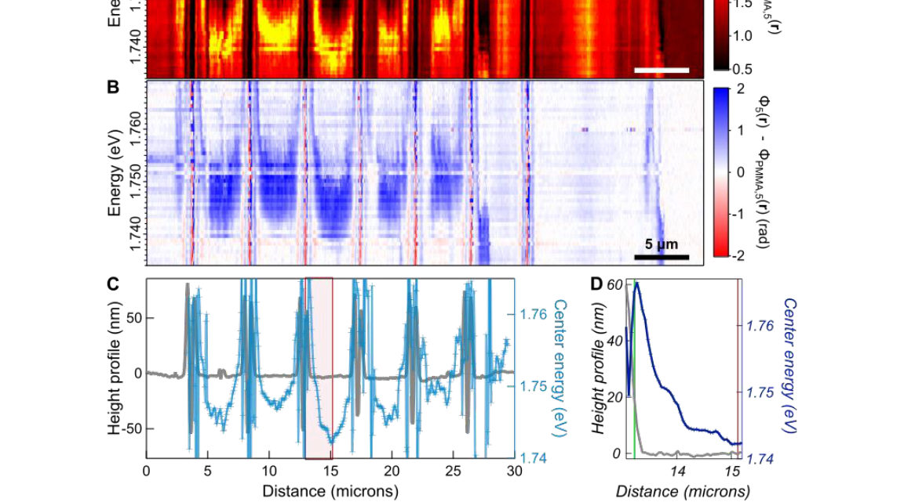
<figcaption class="paper-figure-caption"><b>Fig 2.</b> Figure 2. Exciton spectra measured across AFM indented WSe₂. A,B Variation of the near-field amplitude s5 and phase ϕ5 signal across the line scan shown in Figure 1B as a function of excitation energy (left axis). Scale bars are 5 microns. C Sample height profile (black, left axis) along the scanned line in A,B with finite dipole model (FDM) extracted center energy of the A resonance extracted from a vertical line cut at each pixel (blue, right axis). D Representative exciton energy behavior moving from a strained region between two indents (green line, 13 microns) to an unstrained region between Indents 3 and 4 (red line, ~15 microns). Region of interest marked with red box in C.</figcaption>
</figure>
<figure class="paper-figure-card">
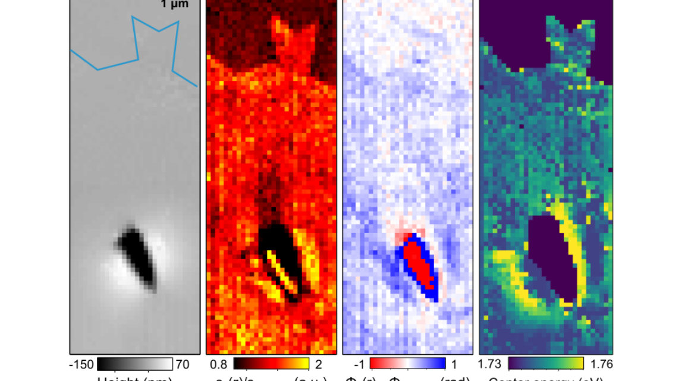
<figcaption class="paper-figure-caption"><b>Fig 3.</b> Figure 3. Mapping strain of nano-indentation region A Investigated region from Sample 2 (Figure S8) showing the amplitude (B) and phase (C) of the measured region at 1.748 eV, near the A exciton resonance. The same scan was repeated as the excitation energy was stepped through the A exciton resonance to map the A exciton center energy as a function of position around the indent region. D Resonance energy, ω0, value across the sample region extracted from the complex dielectric function at each pixel. Spatial disorder in the A resonance energy is observed across the WSe₂ flake, following the rim feature in A.</figcaption>
</figure>
<figure class="paper-figure-card">
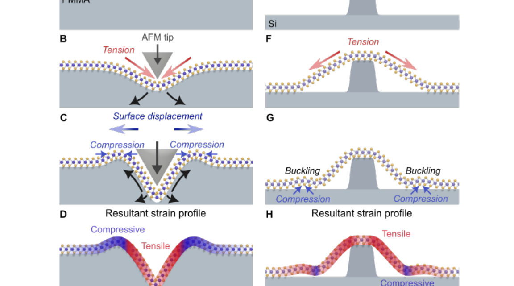
<figcaption class="paper-figure-caption"><b>Fig 4.</b> Figure 4. Scheme of nano-indentation and draping processes. A WSe2 is transferred onto a PMMA substrate and an AFM tip creates the indentation, inducing tensile strain and initiating plastic flow of the deformable PMMA (B). The volume conservation during plastic flow creates a rim, which experiences lateral surface displacement causing compression of the adhered WSe2 (C). The resulting strain profile in D is dominated by extreme tensile values, beyond breaking strain, in the crater and compression in the rim. E WSe2 is transferred to a nanostructured substrate and draped over an individual dielectric pillar, leading to stretching and tensile strain (F). Because the flake must deform...</figcaption>
</figure>
<figure class="paper-figure-card">
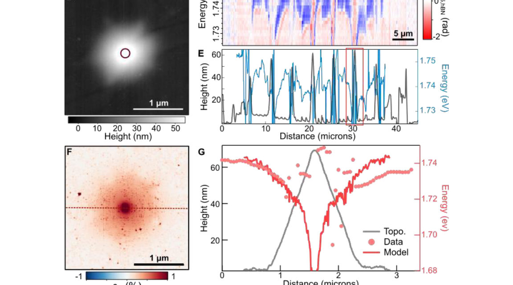
<figcaption class="paper-figure-caption"><b>Fig 5.</b> Figure 5. Exciton spectra of WSe₂ draped across SiO₂ pillars A Optical image of pillar strained sample showing deposited hBN capped WSe₂ on a grid of 60 nm tall cylindrical pillars with 5- micron spacing. B AFM topography image of the pillar circled in red which is representative of the sample deformation around each pillar. C Variation of near-field amplitude (s5) across Row 5 shown in A as a function of excitation energy (left axis). D corresponding phase signal (ϕ5). Scale bars are 5 microns. E Sample height profile (gray, left axis) along the scanned line in C,D with finite dipole model (FDM) extracted center energy of the A exciton resonance extracted from a vertical line cut at each...</figcaption>
</figure>
</div>

<p><strong>Summary.</strong> This paper uses advanced near-field microscopy (s-SNOM) to measure how mechanical strain affects excitons in monolayer WSe2. By comparing results from nano-indentation and pillar patterning, the authors demonstrate that prior estimates of strain were overestimated because the material tears before reaching theoretical limits. This establishes s-SNOM as a key tool for understanding strain-mediated quantum emission in 2D materials.</p>
<p><strong>Why it may be interesting.</strong> The work provides a powerful, direct experimental technique (s-SNOM) to map quantum material properties (excitons) under controlled, localized strain, which is crucial for understanding quantum emitters in 2D materials relevant to quantum optics and solid-state quantum information.</p>
<details>
<summary>Detailed structure</summary>
<p><strong>Main problem.</strong> The study aims to directly probe and quantify the strain-induced modifications of excitonic spectra in monolayer WSe2, resolving the ambiguity in how localized emitters (SPEs) are formed.</p>
<p><strong>Main result.</strong> Direct near-field measurements reveal that the strain experienced by the monolayer is significantly smaller than previously estimated from topography, suggesting that SPEs arise from complex, strain-mediated interactions rather than simple confinement potentials.</p>
<p><strong>Method.</strong> The researchers employed cryogenic scattering-type scanning near-field optical microscopy (s-SNOM) to simultaneously map near-field optical response and topography while applying controlled mechanical strain via nano-indentation and patterned substrates.</p>
<p><strong>Model / system.</strong> The physical system is monolayer WSe2, a transition metal dichalcogenide (TMD). The analysis involves comparing measured exciton energy shifts against theoretical strain models derived from the substrate deformation (e.g., using force equilibrium equations).</p>
<p><strong>Key observables.</strong> Exciton resonance energy shifts ($\Delta E$), near-field amplitude ($s$), phase ($\phi$), and topographical height profiles.</p>
<p><strong>Important parameters / regimes.</strong> Temperature (9 K), sub-diffraction resolution ($\sim 40$ nm), strain magnitude (comparing observed $\sim 15$ meV shifts vs. predicted $\gg 400$ meV shifts).</p>
<p><strong>Assumptions / limitations.</strong> Initial models assumed perfect, continuous strain transfer based on topography, an assumption the paper ultimately refutes by showing material tearing limits the actual strain.</p>
<p><strong>Figures summary.</strong> Figures illustrate s-SNOM setups, near-field amplitude/phase maps across indentations, and line scans correlating exciton energy shifts with physical deformation profiles.</p>
<p><strong>Paper structure.</strong> The paper establishes the need for direct measurement, details the s-SNOM methodology for comparing two strain techniques (indentation vs. pillar draping), presents the quantitative results showing discrepancies between expected and measured strain, and concludes by refining the understanding of SPE origins.</p>
</details>
<details>
<summary>Abstract</summary>
<p>Excitons in monolayer transition metal dichalcogenides (TMDs) are highly sensitive to external stimuli, allowing control of resonance energies and lifetimes through electric and magnetic fields, heterostructures, moire potentials and mechanical strain. Observations of single-photon emission (SPE) near sample edges, wrinkles, and strained nanobubbles have motivated strain-engineering aimed at realizing localized emitters in 2D materials. The origin of these emitters remains unclear and prior studies have relied on far-field spectroscopy with strain profiles inferred separately through topography, limiting direct correlation between local strain and excitonic response. We directly probe strain-modified excitonic spectra in monolayer WSe$_2$ using cryogenic scattering-type scanning near-field optical microscopy (s-SNOM). We compare two strain-engineering techniques, nano-indentation and patterned substrates, used to produce SPEs. At 9 K, we spatially resolve exciton resonance shifts with sub-diffraction limit resolution, simultaneously measuring near-field optical response and topography. We observe that strain transferred from nano-indentation into a deformable polymer substrate differs from that produced by draping TMDs over patterned dielectric pillars. Adhesion and tearing during plastic deformation drive a compressive exciton blueshift, while draping produces dominant tensile strain. Comparing the strain model results to the experimentally observed energy shifts shows that the nano-indentation strain is over an order of magnitude smaller than previously inferred, due to puncturing of the fragile monolayer, whereas pillar-strained devices remain intact under more modest strain. These differences suggest SPE arises from complex, strain-mediated interactions rather than simple confinement potentials, establishing s-SNOM as a powerful probe of quantum emission in strained 2D materials.</p>
</details>
<p><sub><a href="#top">↑ back to top</a></sub></p>

<p><a id="paper-2610.19140"></a></p>
<h3 id="pseudo-relativistic-fermions-and-topological-states-in-zinc-blende-semiconductors-and-their-heterostructures-habilitation-thesis"><a href="http://arxiv.org/abs/2610.19140v1">Pseudo-relativistic fermions and topological states in zinc-blende semiconductors and their heterostructures (Habilitation thesis)</a></h3>
<p><strong>Authors:</strong> Sergey S. Krishtopenko<br>
<strong>Type:</strong> both · <strong>Category:</strong> other · <strong>PDF:</strong> <a href="https://arxiv.org/pdf/2610.19140v1">https://arxiv.org/pdf/2610.19140v1</a><br>
<strong>Analysis basis:</strong> full PDF text, analyzed in chunks
<strong>Topic relevance:</strong> <code>Keldysh / 2PI / non-Gaussian methods</code> <strong>1/5</strong> · <code>analog quantum simulation</code> <strong>1/5</strong></p>
<div class="figure-strip-hint">↔ Scroll figures horizontally</div>
<div class="paper-figures-scroll">
<figure class="paper-figure-card">
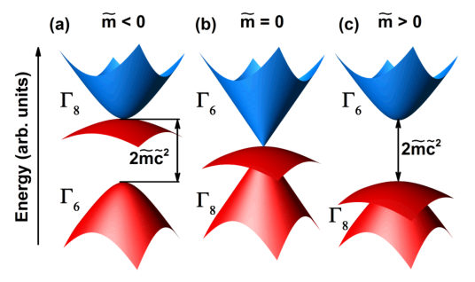
<figcaption class="paper-figure-caption"><b>Fig 1.</b> Figure 2.1: Schematic band structure of Kane fermions in 3D Hg1−xCdxTe as a function of the rest-mass ˜m. For clarity, the “flat heavy-hole” band is shown with the curvature characteristic of the real crystals beyond ˆH6×6(k, θ) in Eq. (2.1).</figcaption>
</figure>
<figure class="paper-figure-card">
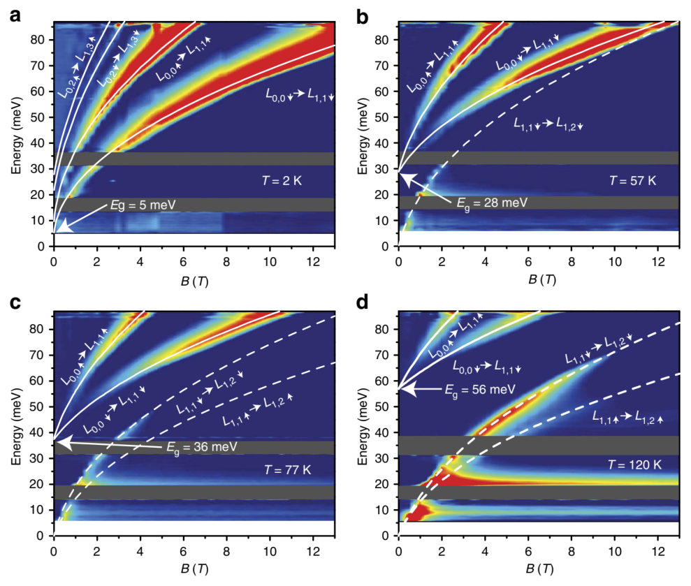
<figcaption class="paper-figure-caption"><b>Fig 2.</b> Figure 2.2: False colour maps present inter-Landau-level transitions as a function of magnetic field in the sample A. White lines represent the fits using Eq. (2.7), allowing for determination of ˜m and ˜c. Solid lines correspond to inter-band transitions, whereas dashed lines account for intra-band transitions. The band-gap values at different temperatures, determined by the inter-band transition energies at zero magnetic field, are depicted with arrows. Shaded areas represent the Reststrahlen bands (between 15–20 meV for Hg1−xCdxTe and 32–37 meV for GaAs substrate band). (a) At 2 K, only inter-band transitions are seen and a √</figcaption>
</figure>
<figure class="paper-figure-card">
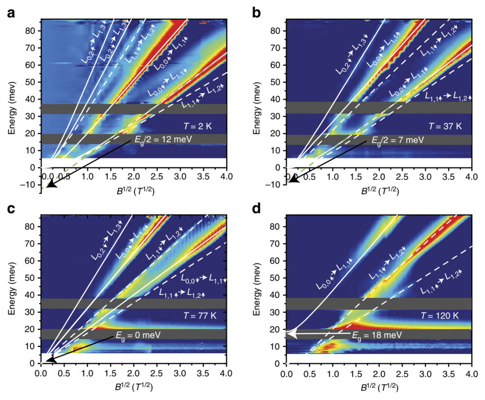
<figcaption class="paper-figure-caption"><b>Fig 3.</b> Figure 2.3: Colour maps of the inter-Landau-level transitions as a function of magnetic field in the sample B at temperatures from 2 to 120 K in a square-root scale. White lines represent the fits using using Eq. (2.7). Solid lines represent inter-band optical transitions, whereas dashed lines correspond to intra-band transitions. Green dotted lines are guides for the eyes accounting for half the band-gap energy at each temperature (with arrows indicating half the band-gap values). (a,b) At 2 and 37 K, some discrepancies to the √</figcaption>
</figure>
<figure class="paper-figure-card">

<figcaption class="paper-figure-caption"><b>Fig 4.</b> Figure 2.4: Parameters ˜m and ˜c determined by fitting magneto-optical data with Eq. (2.7). (a) The values of Kane fermion rest-mass for both samples. The rest-mass in the sample A is close to zero at low temperatures and increases with temperature up to 120 K. In the sample B, the rest-mass is negative at low temperatures, it vanishes at 77 K and then becomes positive above Tc. The curves represent the values, calculated on the basis of phenomenological dependence Eg(x, T) [21]. (b) The Fermi velocity ˜c is nearly constant in both samples between 2 and 120 K. The blue dashed line corresponds to the theoretical value.</figcaption>
</figure>
<figure class="paper-figure-card">
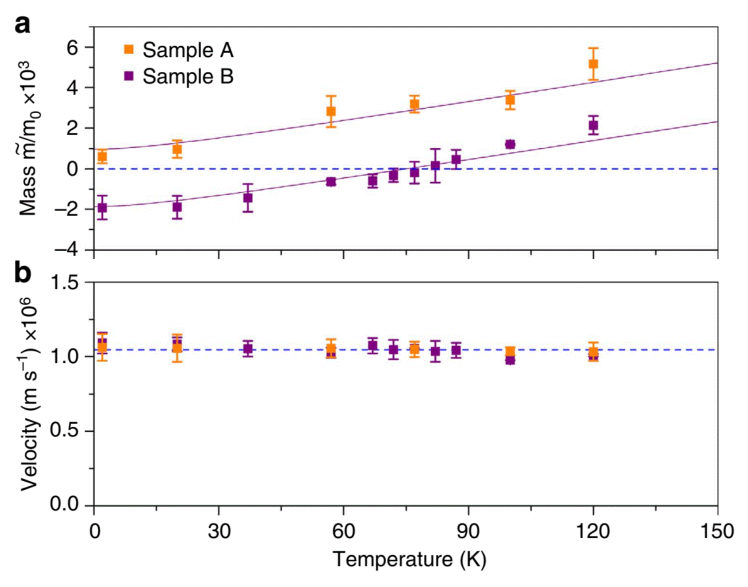
<figcaption class="paper-figure-caption"><b>Fig 5.</b> Figure 2.4 summarises parameters of Kane fermions extracted from experimental data for</figcaption>
</figure>
</div>

<p><strong>Summary.</strong> This comprehensive Habilitation thesis reviews the physics of pseudo-relativistic fermions and topological states in semiconductor heterostructures. It details how material parameters like temperature and strain can drive topological phase transitions, predicting novel quantum states like QSHIs and Dirac semimetals. The work bridges advanced theory with experimental observations in III-V semiconductor platforms.</p>
<p><strong>Why it may be interesting.</strong> The strong focus on topological phases, Dirac fermions, and band inversion in solid-state systems provides rich material for understanding emergent quantum phenomena relevant to quantum materials research.</p>
<details>
<summary>Detailed structure</summary>
<p><strong>Main problem.</strong> The research investigates the physics of pseudo-relativistic fermions and topological electronic states within zinc-blende semiconductor heterostructures.</p>
<p><strong>Main result.</strong> The work predicts and discusses the existence of topological phases, such as Quantum Spin Hall Insulators and 2D Higher-Order Topological Insulators, in these low-dimensional semiconductor systems.</p>
<p><strong>Method.</strong> The approach combines theoretical modeling of band structures and many-body effects with the analysis of experimental measurements like magnetotransport and photoconductivity.</p>
<p><strong>Model / system.</strong> The primary systems are zinc-blende semiconductors and their heterostructures (e.g., HgCdTe, InAs/GaSb), studied in quantum wells and superlattices. The physics is governed by pseudo-relativistic fermion behavior.</p>
<p><strong>Key observables.</strong> Quantized helical edge transport, Landau level collapse, Quantum Spin Hall Insulator signatures, and Dirac fermion behavior.</p>
<p><strong>Important parameters / regimes.</strong> Temperature, applied pressure, electric fields, and magnetic fields are key tuning parameters for observing phase transitions.</p>
<p><strong>Assumptions / limitations.</strong> The work often relies on analyzing the interplay between single-particle band structure effects and electron-electron interaction effects.</p>
<p><strong>Figures summary.</strong> Not specified, as the notes summarize the scope rather than describing specific figures.</p>
<p><strong>Paper structure.</strong> The HDR memoir is structured thematically, progressing from bulk HgCdTe studies to phase transitions in HgTe QWs, and finally detailing the potential of III-V QW heterostructures for topological physics.</p>
</details>
<details>
<summary>Abstract</summary>
<p>Tracing my scientific path from many-body physics in semiconductor nanostructures to topological quantum matter, this Habilitation à diriger des recherches (HDR) memoir presents only part of my research since defending two PhD theses in Toulouse and Nizhny Novgorod in 2011. Focusing on pseudo-relativistic fermions and topological states in zinc-blende semiconductors and their heterostructures, it highlights my independent research program: identifying physical problems, developing predictive theories, and initiating new directions with experimentalists.   The first part addresses Kane fermions in bulk HgCdTe: temperature-driven band inversion, domain-wall states, the collapse of Landau levels in crossed electric and magnetic fields, and disorder-induced topological transitions. The second examines pressure-, temperature-, and disorder-driven phase transitions in single and double HgTe quantum wells (QWs), including bilayer-graphene-like semimetals and a two-dimensional higher-order topological insulator (2D HOTI) phase beyond the minimal BHZ model. The third develops three-layer InAs/Ga(In)Sb QWs as a III-V platform for massless Dirac fermions, large-gap quantum spin Hall insulators, 2D HOTI phases, and semimetals with quadratic band touching, and discusses InAs$_{x}$Sb$_{1-x}$/InAs$_{y}$Sb$_{1-y}$ heterostructures as a promising alternative. Several of these predictions are supported by experimental observations, including quantized helical edge transport up to 60 K and the unconventional quantum Hall effect.   Defended on March 25, 2026, at the University of Montpellier. Jury: Michel GOIRAN (chair and rapporteur, LNCMI-CNRS, Toulouse); Alexey KAVOKIN (rapporteur, Westlake University, Hangzhou); Robson FERREIRA (rapporteur, LPENS-CNRS, Paris); Alexei BARANOV (member, IES-CNRS, Montpellier); Benoit JOUAULT and Frédéric TEPPE (members, L2C-CNRS, Montpellier).</p>
</details>
<p><sub><a href="#top">↑ back to top</a></sub></p>

<p><a id="paper-2610.19577"></a></p>
<h3 id="two-way-coupled-dynamics-of-quantized-vortex-bundle-formation-in-spatially-periodic-normal-fluid-turbulence"><a href="http://arxiv.org/abs/2610.19577v1">Two-Way Coupled Dynamics of Quantized Vortex Bundle Formation in Spatially Periodic Normal-Fluid Turbulence</a></h3>
<p><strong>Authors:</strong> Hiromichi Kobayashi, Makoto Tsubota, Rio Yokota<br>
<strong>Type:</strong> theory · <strong>Category:</strong> other · <strong>PDF:</strong> <a href="https://arxiv.org/pdf/2610.19577v1">https://arxiv.org/pdf/2610.19577v1</a><br>
<strong>Analysis basis:</strong> full PDF text, analyzed in chunks
<strong>Topic relevance:</strong> <code>Frenkel-Kontorova</code> <strong>1/5</strong> · <code>non-equilibrium universality</code> <strong>1/5</strong></p>
<div class="figure-strip-hint">↔ Scroll figures horizontally</div>
<div class="paper-figures-scroll">
<figure class="paper-figure-card">
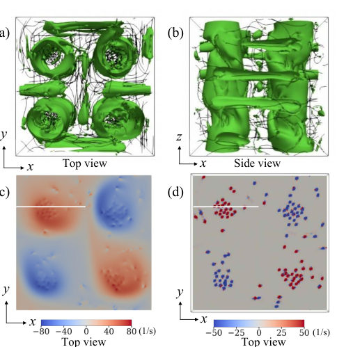
<figcaption class="paper-figure-caption"><b>Fig 1.</b> FIG. 1. Instantaneous distributions of quantized vortices (black lines) and normal-fluid vortex tubes (green isosur- faces for the second invariant of the velocity gradient tensor Q = 1000 s−2) at t = 5.81 s in (a) top view and (b) side view. Panels (c) and (d) show the corresponding top views of the z-component of normal-fluid vorticity ωn,z and superfluid vor- ticity ωs,z, respectively, with white solid lines indicating the extraction line for spatial profiles. (e) One-dimensional spa- tial profiles of normal-fluid velocity magnitude |vn| (black), superfluid velocity magnitude |vs| (green), normal-fluid vor- ticity ωn,z (red), and scaled superfluid vorticity ωs,z/10 (blue) along the white...</figcaption>
</figure>
<figure class="paper-figure-card">
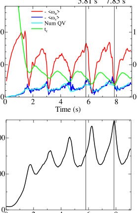
<figcaption class="paper-figure-caption"><b>Fig 2.</b> FIG. 3. (a) Time evolutions of the spatial-averaged normal- fluid vorticity ⟨ωn⟩(red), superfluid vorticity ⟨ωs⟩(blue), number of quantized vortices (light blue) evaluated for Q &gt; 1000 s−2, and coupling timescale tc (green), and (b) time evo- lution of the total vortex line density L. Vertical lines indicate t = 5.81 s and 7.85 s.</figcaption>
</figure>
<figure class="paper-figure-card">
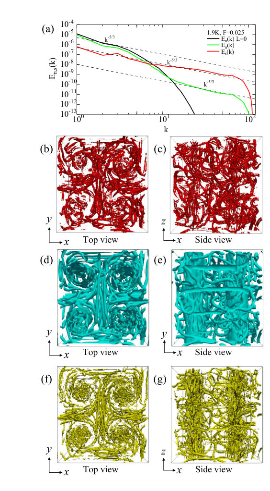
<figcaption class="paper-figure-caption"><b>Fig 3.</b> FIG. 2. (a) Time-averaged (5 ≤t ≤20 s) energy spectra of the uncoupled normal fluid calculated from the Navier–Stokes equation, Eq. (2), alone (black) and the two-way coupled sys- tem for the superfluid Es(k) (red) and normal fluid En(k) (green). The dashed lines indicate a k−5/3 power-law slope. (b)–(g) Instantaneous distributions of vortex tubes filtered by wavenumber ranges at t = 5.81 s: (b) top view and (c) side view of high-wavenumber (k &gt; 15) normal-fluid vortex tubes (red: Q = 50 s−2); (d) top view and (e) side view of low-wavenumber (k ≤15) superfluid vortex tubes (light blue: Q = 500 s−2); and (f) top view and (g) side view of high-wavenumber (k &gt; 15) superfluid vortex tubes...</figcaption>
</figure>
<figure class="paper-figure-card">
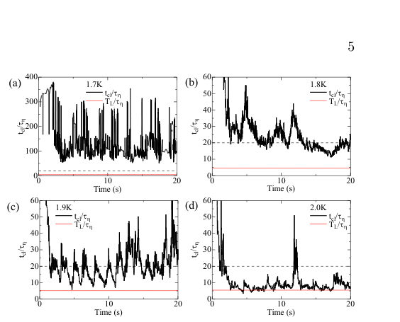
<figcaption class="paper-figure-caption"><b>Fig 4.</b> FIG. 5. Time evolutions of the ratio of the local coupling time scale tcl = 1/(ακLQ&gt;1000) to the Kolmogorov dissipation time scale τη at (a) T = 1.7 K, (b) 1.8 K, (c) 1.9 K, and (d) 2.0 K [black dashed line: 20; red line: TL/τη, where TL is the eddy turnover time].</figcaption>
</figure>
<figure class="paper-figure-card">
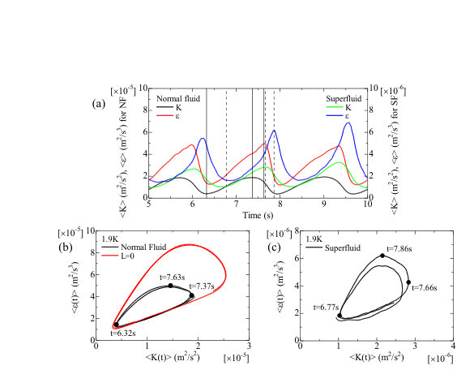
<figcaption class="paper-figure-caption"><b>Fig 5.</b> FIG. 4. (a) Time evolutions of kinetic energy ⟨K⟩(nor- mal fluid: black, superfluid: green) and energy dissipation rate ⟨ε⟩(normal fluid: red, superfluid: blue). Vertical solid and dashed lines indicate corresponding times for the normal fluid (t = 6.32, 7.37, and 7.63 s) and superfluid (t = 6.77, 7.66, and 7.86 s), respectively. (b) Phase-space trajectories of ⟨K(t)⟩versus ⟨ε(t)⟩for the normal fluid without (red) and with (black) quantized vortices. (c) Phase-space trajectory of ⟨K(t)⟩versus ⟨ε(t)⟩for the superfluid.</figcaption>
</figure>
</div>

<p><strong>Summary.</strong> This work simulates the coupled dynamics of superfluid and normal fluid in helium to understand quantized vortex bundling. The key finding is that mutual friction drives this bundling, creating a nested structure within normal-fluid tubes. This establishes a quantitative criterion for the stability of these quantum vortex bundles.</p>
<p><strong>Why it may be interesting.</strong> The detailed study of energy cascade and multiscale organization in a quantum fluid system provides insights into non-equilibrium dynamics and energy transfer mechanisms relevant to quantum turbulence.</p>
<details>
<summary>Detailed structure</summary>
<p><strong>Main problem.</strong> The study investigates the mechanism by which quantized vortices in superfluid helium form coherent bundles within the surrounding normal-fluid vortex tubes.</p>
<p><strong>Main result.</strong> Mutual friction with the normal fluid actively drives vortex bundling, leading to a nested superfluid structure and establishing a condition (t_cl/tau_eta &lt; 20) for enhanced thermal stability.</p>
<p><strong>Method.</strong> The research employs fully coupled two-way simulations combining the Vortex Filament Model (VFM) for the superfluid and the Navier-Stokes equations for the normal fluid.</p>
<p><strong>Model / system.</strong> The system is superfluid Helium ($  ext{He}$) modeled as a two-fluid mixture, where dynamics are governed by the coupling force of mutual friction between the superfluid and normal fluid components.</p>
<p><strong>Key observables.</strong> Energy spectra ($  ext{En}(k)$, $  ext{Es}(k)$), vortex line density, superfluid and normal fluid vorticities, and the ratio of local coupling time scale ($  ext{t}<em _eta="\eta">{    ext{cl}}$) to Kolmogorov dissipation time scale ($    au</em>$).</p>
<p><strong>Important parameters / regimes.</strong> The ratio $ ext{t}<em _eta="\eta">{    ext{cl}}/   au</em>$ is crucial for determining bundle lifetime and thermal stability; the coupling strength is influenced by temperature.</p>
<p><strong>Assumptions / limitations.</strong> The analysis assumes spatially periodic normal-fluid turbulence and utilizes the two-fluid model framework.</p>
<p><strong>Figures summary.</strong> Figures illustrate instantaneous vortex distributions, time-averaged energy spectra showing $k^{-5/3}$ scaling, and time evolution plots tracking energy, vorticity, and the coupling time scale ratio.</p>
<p><strong>Paper structure.</strong> The paper develops the coupled equations, simulates the dynamics, analyzes the energy spectra and vortex structures, and concludes by deriving the condition governing the stability and formation of vortex bundles.</p>
</details>
<details>
<summary>Abstract</summary>
<p>Using fully coupled two-way simulations combining the vortex filament model with the Navier--Stokes equations, we discover that quantized vortices in superfluid $^4$He are systematically rolled up into coherent bundles within normal-fluid vortex tubes. Although co-rotating quantized vortices do not aggregate spontaneously, mutual friction with the normal fluid actively drives their bundling, directly inheriting the spatial hierarchy of classical turbulence. Mutual friction excites high-wavenumber normal-fluid vortex tubes adjacent to quantized vortices, while the superfluid forms a nested structure of thick low-wavenumber outer tubes and fine high-wavenumber inner tubes around the vortex lines. A distinct time lag between superfluid kinetic energy and dissipation fuels the energy cascade, giving rise to Kolmogorov's $k^{-5/3}$ spectrum. Crucially, bundle lifetimes are governed by the ratio of the local coupling time scale $t_\mathrm{cl}$ to the Kolmogorov dissipation time scale $τ_η$ ($t_\mathrm{cl}/τ_η< 20$), leading to enhanced thermal stability at higher temperatures. These findings establish a unified mechanism for two-fluid multiscale vortex organization.</p>
</details>
<p><sub><a href="#top">↑ back to top</a></sub></p>

<p><a id="paper-2610.19833"></a></p>
<h3 id="magnetic-field-induced-modulation-of-heat-transport-in-crpsmath1218math-probed-by-tairtemath1219math-transverse-seebeck-thermometry"><a href="http://arxiv.org/abs/2610.19833v1">Magnetic field induced modulation of heat transport in CrPS$_4$ probed by TaIrTe$_4$ transverse Seebeck thermometry</a></h3>
<p><strong>Authors:</strong> Krishnaraajan Sundararajan, Sergio Alvarruiz, Cédric A. Cordero-Silis, Majid Ahmadi, Marcos H. D. Guimarães, Jagoda S\lawińska, Joseph Barker, Bart J. van Wees<br>
<strong>Type:</strong> experiment · <strong>Category:</strong> statistical mechanics · <strong>PDF:</strong> <a href="https://arxiv.org/pdf/2610.19833v1">https://arxiv.org/pdf/2610.19833v1</a><br>
<strong>Analysis basis:</strong> full PDF text, analyzed in chunks
<strong>Topic relevance:</strong> <code>quantum measurements</code> <strong>1/5</strong></p>
<div class="figure-strip-hint">↔ Scroll figures horizontally</div>
<div class="paper-figures-scroll">
<figure class="paper-figure-card">
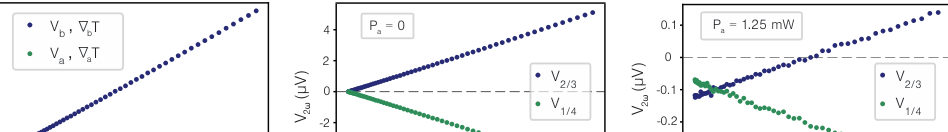
<figcaption class="paper-figure-caption"><b>Fig 1.</b> FIG. 1. a) Crystal structure of TaIrTe4, highlighting the mirror symmetry (denoted by σ(bc)), b) false-colored scanning electron micrograph of the device fabricated to verify the goniopolar nature of TaIrTe4 (scale bar: 5 µm), c) schematic illustration of the device geometry for probing the transverse Seebeck response: in blue is the TaIrTe4 flake and in red, the platinum heaters employed, where Pa(Pb) refer to the power dissipated in the platinum heaters, generating a temperature gradient along the crystallographic-a (b) axes. d) Room temperature longitudinal thermoelectric response (Seebeck) detected across TaIrTe4 for a temperature gradient along the crystallographic-a and -b axes (in...</figcaption>
</figure>
<figure class="paper-figure-card">
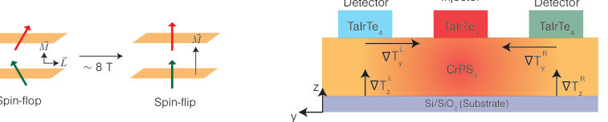
<figcaption class="paper-figure-caption"><b>Fig 2.</b> FIG. 2. a) (Top panel) Crystal structure of CrPS4 in the ab and in the bc planes. (Bottom panel) Illustration of the magnetic transitions in CrPS4 under an external magnetic field with the corresponding directions of the Néel (⃗L = ⃗ m1 - ⃗ m2) and the magnetization ( ⃗ M = ⃗ m1 + ⃗ m2) vectors, where ⃗ m1 and ⃗ m2 denote the sub-lattice magnetization. Illustration of the nonlocal geometry along with the various temperature gradients viewed along (b) the xy plane and (c) the yz plane.</figcaption>
</figure>
<figure class="paper-figure-card">
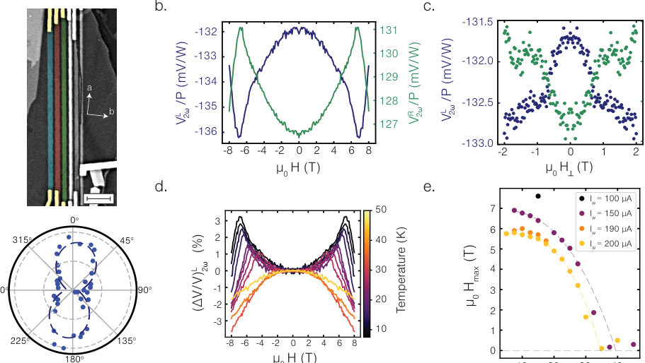
<figcaption class="paper-figure-caption"><b>Fig 3.</b> FIG. 3. a) (Top) Scanning electron micrograph (false colored: red indicating the heater electrode, blue and green indicating the detectors on the left and the right side, scale bar: 4 µm) of device D1 and (bottom) Raman intensities of the mode corresponding to 147 cm−1 a function of the sample rotation angle. The solid dots correspond to the experimental data and the dotted lines to the fitting curve; Field dependence of the symmetrized second-harmonic voltage response measured by the left and the right detectors b) across the spin-flip transition of CrPS4 for an applied in-plane magnetic field and c) across the spin-flop transition for an applied out-of-plane magnetic field (at 7.5K and...</figcaption>
</figure>
<figure class="paper-figure-card">
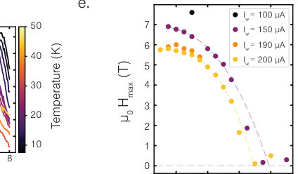
<figcaption class="paper-figure-caption"><b>Fig 4.</b> Fig. 3b shows the symmetrized second-harmonic voltage response of the TaIrTe4 detectors as a func- tion of applied magnetic field. We normalize the second-harmonic voltage response to its zero-field value and define ∆V/V = [V (B) −V (0)]/V (0). Since the thermoelectric voltage response is proportional to the local temperature gradient, ∆V/V directly reflects</figcaption>
</figure>
<figure class="paper-figure-card">
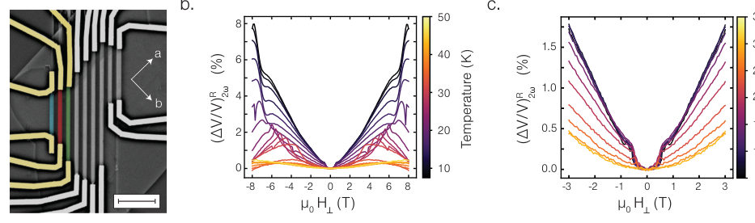
<figcaption class="paper-figure-caption"><b>Fig 5.</b> FIG. 4. a) False colored scanning electron micrograph of device D2; Field dependence of the symmetrized and normalized second-harmonic voltage response of the right detector b) for an out-of-plane magnetic field across the spin-flip transition and c) an out-of-plane magnetic field across the spin-flop transition of CrPS4 as a function of temperature (Iheater = 30 µA). (Scale Bar: 5 µm)</figcaption>
</figure>
</div>

<p><strong>Summary.</strong> This research uses transverse Seebeck thermometry with $   ext{TaIrTe}_4$ to sensitively measure heat transport in the van der Waals magnet $  ext{CrPS}_4$. By applying an external magnetic field, the authors resolve clear modulations in thermal conductivity corresponding to magnetic phase transitions. This demonstrates a powerful, non-invasive platform for studying magnetic control over thermal energy flow.</p>
<p><strong>Why it may be interesting.</strong> This work provides an experimental demonstration of using thermoelectric effects to probe subtle, magnetically induced changes in thermal transport, which is a key area bridging condensed matter physics and thermal energy management.</p>
<details>
<summary>Detailed structure</summary>
<p><strong>Main problem.</strong> The study aims to understand and control heat flow in low-dimensional magnetic materials by investigating the magnetic field-induced modulation of thermal conductivity.</p>
<p><strong>Main result.</strong> The researchers successfully detected distinct, field-dependent changes in the thermal conductivity of $   ext{CrPS}_4$ associated with its spin-flip and spin-flop magnetic transitions, attributing this to variations in magnon–phonon coupling.</p>
<p><strong>Method.</strong> Transverse Seebeck thermometry is employed using exfoliated $   ext{TaIrTe}_4$ as a highly sensitive, non-invasive thermal probe on the van der Waals magnet $  ext{CrPS}_4$.</p>
<p><strong>Model / system.</strong> The system involves a layered van der Waals antiferromagnet ($  ext{CrPS}_4$) whose thermal transport properties are modulated by an external magnetic field, measured using a two-dimensional semi-metal ($ ext{TaIrTe}_4$) as the sensing element.</p>
<p><strong>Key observables.</strong> Transverse thermopower (exceeding $200 \mu	ext{V K}^{-1}$), field-dependent modulation of thermal conductivity ($\kappa$), and the thermoelectric voltage response ($\Delta V/V$).</p>
<p><strong>Important parameters / regimes.</strong> Low temperature (e.g., 5 K), magnetic field strength (near spin-flop/spin-flip transitions), and temperature gradient orientation relative to crystal axes.</p>
<p><strong>Assumptions / limitations.</strong> The transverse Seebeck effect provides a non-invasive, nonlocal probe for magnetic heat transport, and the observed modulation is primarily due to changes in magnon–phonon coupling.</p>
<p><strong>Figures summary.</strong> Figures illustrate the crystal structure and device geometry of $  ext{TaIrTe}_4$, showing how the transverse voltage response is measured when the temperature gradient is oriented at $45^\circ$ to the principal axes.</p>
<p><strong>Paper structure.</strong> The paper establishes the need for sensitive thermal probes in magnetic materials, details the use of $    ext{TaIrTe}_4$ for transverse Seebeck thermometry, and presents measurements demonstrating the magnetic field's ability to modulate $   ext{CrPS}_4$'s thermal conductivity across magnetic transitions.</p>
</details>
<details>
<summary>Abstract</summary>
<p>Understanding and controlling heat flow in low-dimensional magnetic materials is central to thermoelectrics and spin caloritronics. One of the challenges is the absence of sensitive probes of small, field-dependent modulations in thermal transport. Here we demonstrate transverse Seebeck thermometry using exfoliated TaIrTe$_4$ as a probe of thermal conductivity modulated by an external magnetic field on a van der Waals magnet, CrPS$_4$. With a temperature gradient oriented at $45^\circ$ to its principal crystallographic axes, TaIrTe$_4$ exhibits a transverse thermopower exceeding $200~\mathrm{μV\,K^{-1}}$ for 900 nm wide and 30 $μ$m long electrodes, enabling precise detection of variations in the local temperature gradients. Exploiting this with CrPS$_4$ in a nonlocal geometry, we resolve distinct field dependent thermal conductivity changes associated with both the spin-flip and spin-flop magnetic transitions which we attribute to variations in the magnon$-$phonon coupling in CrPS$_4$. At 5 K, the transverse Seebeck response is modulated by more than 8$\%$ by an external magnetic field, demonstrating strong magnetic control of heat transport in CrPS$_4$. This all van der Waals platform offers high sensitivity to modulations of thermal conductivity and a broad adaptability to a wide range of exfoliated magnetic systems.</p>
</details>
<p><sub><a href="#top">↑ back to top</a></sub></p>

<p><a id="paper-2610.19383"></a></p>
<h3 id="phase-stability-and-anisotropic-superconductivity-in-ternary-m2b4c2-mca-mg-monolayer"><a href="http://arxiv.org/abs/2610.19383v1">Phase Stability and Anisotropic Superconductivity in Ternary M2B4C2 (M=Ca, Mg) Monolayer</a></h3>
<p><strong>Authors:</strong> Jakkapat Seeyangnok, Udomsilp Pinsook, Graeme J Ackland<br>
<strong>Type:</strong> theory · <strong>Category:</strong> other · <strong>PDF:</strong> <a href="https://arxiv.org/pdf/2610.19383v1">https://arxiv.org/pdf/2610.19383v1</a><br>
<strong>Analysis basis:</strong> full PDF text, analyzed in chunks
<strong>Topic relevance:</strong> <code>Keldysh / 2PI / non-Gaussian methods</code> <strong>1/5</strong></p>
<div class="figure-strip-hint">↔ Scroll figures horizontally</div>
<div class="paper-figures-scroll">
<figure class="paper-figure-card">
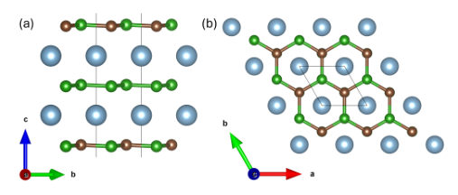
<figcaption class="paper-figure-caption"><b>Fig 1.</b> FIG. 1. (a) Side view and (b) top view of the crystal structure of MB4C2 (M =Ca, Mg) in space group P3m1 (No. 156). Light blue, green, and brown spheres represent M, B, and C atoms, respectively.</figcaption>
</figure>
<figure class="paper-figure-card">
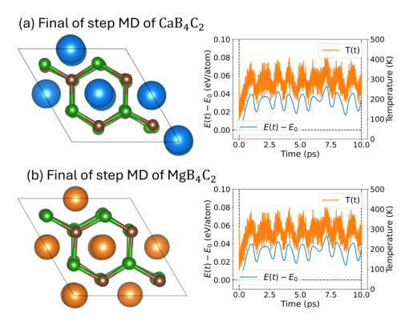
<figcaption class="paper-figure-caption"><b>Fig 2.</b> FIG. 2. Ab initio molecular dynamics (AIMD) simulations of the MB4C2 monolayers at 300 K for 10 ps. The results are shown for (a) CaB4C2, and (b) MgB4C2. In each panel, the left side displays the final structural snapshot of the 2×2 supercell at the end of the sim- ulation. The right side shows the time evolution of the temperature T(t) (orange line, right axis) and the total energy variation per atom E(t)−E0 (blue line, left axis).</figcaption>
</figure>
<figure class="paper-figure-card">
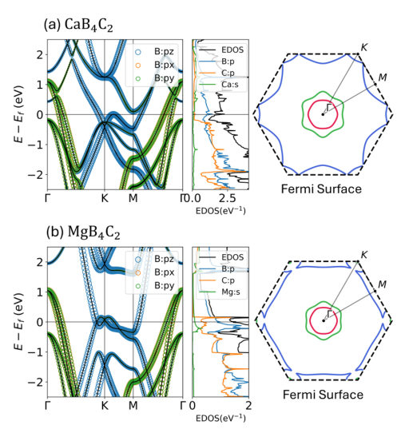
<figcaption class="paper-figure-caption"><b>Fig 3.</b> FIG. 3. Electronic band structures, projected density of states (PDOS), and Fermi surfaces for monolayer (a) AlB4C2, (b) CaB4C2, and (c) MgB4C2. In the band structure plots, orbital contributions are highlighted by open circles, where the marker size corresponds to the spectral weight of the specified state. The horizontal solid line at zero energy indicates the Fermi level (EF). The dashed black hexagons represent the first Brillouin zone for the Fermi surfaces.</figcaption>
</figure>
<figure class="paper-figure-card">
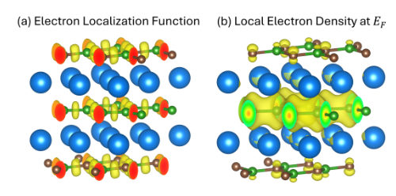
<figcaption class="paper-figure-caption"><b>Fig 4.</b> FIG. 4. Three-dimensional spatial distributions of (a) the electron lo- calization function (ELF) and (b) the local electron density evaluated at the Fermi level (EF) for the MB4C2 systems. The ELF highlights the strong covalent bonds within the honeycomb network, while the local density at EF visualizes the p-orbital character of the conduc- tion electrons.</figcaption>
</figure>
<figure class="paper-figure-card">
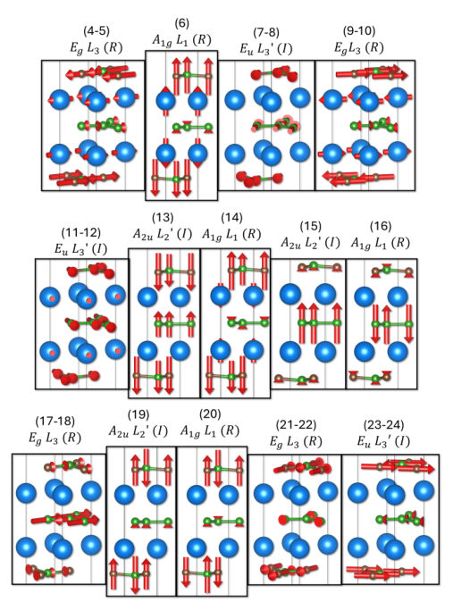
<figcaption class="paper-figure-caption"><b>Fig 5.</b> FIG. 5. Schematic representation of the atomic displacement pat- terns for the optical phonon modes at the Brillouin zone center (Γ point) of the MB4C2 monolayers. Each panel is labeled with the cor- responding mode index (based specifically on the CaB4C2 system), symmetry, irreducible representation, and optical activity (R for Ra- man, I for Infrared). Red arrows indicate the direction and relative amplitude of the atomic vibrations.</figcaption>
</figure>
</div>

<p><strong>Summary.</strong> This theoretical study analyzes the stability and superconductivity of 2D borocarbides $   ext{M}_2    ext{B}_4    ext{C}_2$. Using advanced first-principles methods, the authors confirm the structural robustness and predict that both $   ext{Ca}$ and $  ext{Mg}$ compounds are high-$T_c$, two-gap superconductors. The work establishes these materials as promising candidates for nanoscale superconducting devices.</p>
<p><strong>Why it may be interesting.</strong> While the focus is on solid-state superconductivity, the use of advanced many-body theory (Eliashberg equations) and the analysis of anisotropic pairing mechanisms provide rich theoretical material relevant to strongly correlated systems.</p>
<details>
<summary>Detailed structure</summary>
<p><strong>Main problem.</strong> The study investigates the phase stability, electronic structure, and superconducting properties of two-dimensional ternary borocarbides, $   ext{M}_2    ext{B}_4    ext{C}_2$ ($    ext{M} =    ext{Ca},    ext{Mg}$).</p>
<p><strong>Main result.</strong> Both $ ext{CaB}_4  ext{C}_2$ and $ ext{MgB}_4  ext{C}_2$ monolayers are predicted to be stable, nodeless, two-gap superconductors with high critical temperatures ($T_c \approx 33 	ext{ K}$).</p>
<p><strong>Method.</strong> The research employs first-principles calculations (DFT) combined with fully anisotropic Migdal-Eliashberg theory to model electron-phonon coupling and superconductivity.</p>
<p><strong>Model / system.</strong> The physical system is the $    ext{M}_2    ext{B}_4    ext{C}_2$ monolayer, which is analyzed for its structural, electronic, and superconducting characteristics.</p>
<p><strong>Key observables.</strong> Critical temperature ($T_c$), electron-phonon coupling constant ($\lambda$), superconducting energy gaps ($\Delta_1, \Delta_2$), and mechanical/thermal stability metrics.</p>
<p><strong>Important parameters / regimes.</strong> Coulomb pseudopotential ($\mu^*=0.10$ or $0.13$), temperature ($300 	ext{ K}$), and material identity ($    ext{Ca}$ vs. $  ext{Mg}$).</p>
<p><strong>Assumptions / limitations.</strong> The calculations rely on DFT approximations and the validity of the Migdal-Eliashberg theory for describing superconductivity.</p>
<p><strong>Figures summary.</strong> Figures illustrate the crystal structure, AIMD simulations showing thermal stability, and potentially the momentum-resolved electron-phonon coupling and superconducting gap structure.</p>
<p><strong>Paper structure.</strong> The paper follows a logical progression: first establishing structural and thermal stability via AIMD and elastic constants; second, characterizing the electronic structure and bonding; and finally, applying anisotropic Eliashberg theory to predict the superconducting state and $T_c$.</p>
</details>
<details>
<summary>Abstract</summary>
<p>In this work, we investigate the phase stability, electronic structure, and superconducting properties of the two-dimensional ternary borocarbides MB$_4$C$_2$ (M = Ca, Mg) using first-principles calculations and fully anisotropic Migdal-Eliashberg theory. Ab initio molecular dynamics, phonon dispersion, and elastic constant calculations confirm that both monolayers are dynamically, thermally, and mechanically stable. Electronic structure analysis reveals an intrinsic metallic nature with a multiband Fermi surface, where states near the $Γ$ point are dominated by in-plane B-$p_x$, $p_y$ orbitals, while zone-boundary states are primarily derived from out-of-plane B-$p_z$ orbitals. The electron-phonon coupling is determined to be $λ= 0.64$ for both materials, driven by the rigid covalent B-B and B-C honeycomb networks. By solving the anisotropic Eliashberg equations, we predict that CaB$_4$C$_2$ and MgB$_4$C$_2$ are nodeless two-gap superconductors with critical temperatures ($T_c$) of 33.4 K and 33.8 K, respectively, at a Coulomb pseudopotential of $μ= 0.10$. Furthermore, the superconducting state remains robust under increased Coulomb repulsion ($μ= 0.13$), retaining elevated $T_c$ values of 31.2 K and 30.9 K, respectively. These findings establish MB$_4$C$_2$ monolayers as promising candidates for nanoscale superconducting applications and enrich the family of two-dimensional multigap superconductors.</p>
</details>
<p><sub><a href="#top">↑ back to top</a></sub></p>
<h3 id="other-secondary-papers-3">Other secondary papers (3)</h3>
<details>
<summary>Show other secondary papers</summary>

<p><a id="paper-2610.19057"></a></p>
<h3 id="a-conservative-darcy-brinkman-stokes-formulation-for-phreeqc-coupled-reactive-transport-with-cell-based-surface-complexation"><a href="http://arxiv.org/abs/2610.19057v1">A Conservative Darcy-Brinkman-Stokes Formulation for PHREEQC-Coupled Reactive Transport with Cell-Based Surface Complexation</a></h3>
<p><strong>Authors:</strong> Hannah P. Menke, Florian Doster, Julien Maes<br>
<strong>Type:</strong> theory · <strong>Category:</strong> numerical methods · <strong>PDF:</strong> <a href="https://arxiv.org/pdf/2610.19057v1">https://arxiv.org/pdf/2610.19057v1</a><br>
<strong>Analysis basis:</strong> full PDF text, analyzed in chunks</p>
<div class="figure-strip-hint">↔ Scroll figures horizontally</div>
<div class="paper-figures-scroll">
<figure class="paper-figure-card">
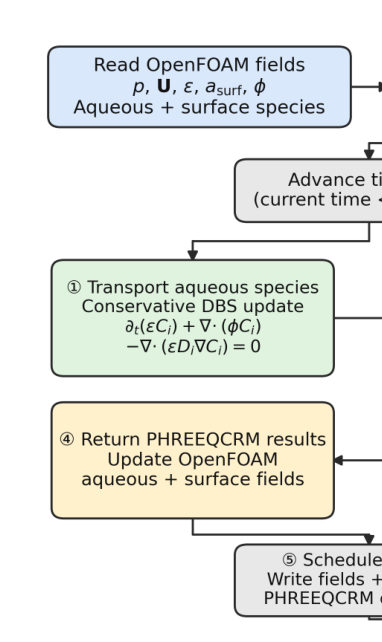
<figcaption class="paper-figure-caption"><b>Fig 1.</b> Fig. 1 Source-traced solution procedure for reactiveTransportDBSFoam with phreeqcMixture. The constructor establishes the active-cell mapping and initial PhreeqcRM state. Each timestep advances all aqueous species in conservative DBS form, after which speciesMixture.correct() transfers the aqueous and surface state to PhreeqcRM, executes runCells(), and returns the updated species fields. At output times, it writes the fields and, when enabled, a matching complete PhreeqcRM checkpoint.</figcaption>
</figure>
<figure class="paper-figure-card">
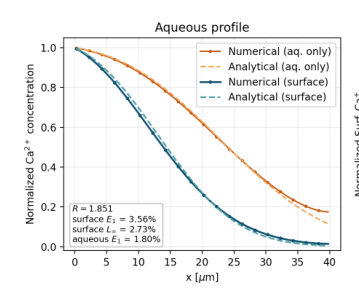
<figcaption class="paper-figure-caption"><b>Fig 2.</b> Fig. 2 1D retardation benchmark: spatial profiles at t = 10 s. Left: normalised aqueous Ca2+ profiles for the aqueous-only and surface-enabled runs, compared with the corresponding cell-averaged semi- infinite Ogata–Banks solutions. Inset errors are measured relative to these semi-infinite profiles. Right: normalised adsorbed amount compared with the linear-equilibrium reference constructed from the batch-calibrated Ks and the retarded Ogata–Banks profile.</figcaption>
</figure>
<figure class="paper-figure-card">
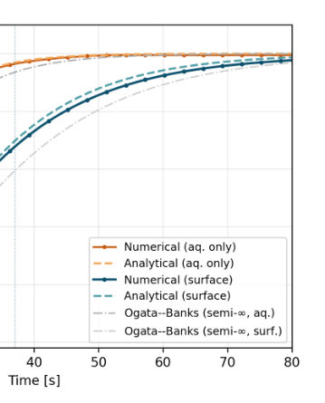
<figcaption class="paper-figure-caption"><b>Fig 3.</b> Fig. 3 1D outlet breakthrough curves. Symbols show the outlet-patch area-averaged Ca2+ nor- malised by the inlet concentration Cin for the aqueous-only and surface-enabled runs. Dashed lines are high-resolution finite-domain references with the same inlet and outlet conditions as the numerical cases. Dash-dot lines show the semi-infinite Ogata–Banks solutions; their difference from the dashed curves illustrates the effect of the finite-domain outlet condition. Vertical dotted lines mark the advec- tive breakthrough times tBT = Lθ/UD (aqueous-only) and tBT = LθR/UD (surface-enabled).</figcaption>
</figure>
<figure class="paper-figure-card">

<figcaption class="paper-figure-caption"><b>Fig 4.</b> Fig. 4 Controlled surface-area tests for the quasi-2D and 3D smooth-interface reconstructions. Left: voxelised circular-post slices, with the analytic circular interface shown in red, and three-dimensional renderings of the voxelised spheres at R/∆x = 8 and 16, overlaid by the semi-transparent red analytic spheres. Blue and amber identify voxel faces outside and inside the analytic sphere; these geometry colours are distinct from the method colours used in the error plots. Right: relative integrated surface- area error at R/∆x = 8, 16, 32, and 64 for the 2D circular post (Aref = 2πRh) and 3D sphere (Aref = 4πR2). The analytic areas define error; snappyHexMesh is a body-fitted comparator....</figcaption>
</figure>
<figure class="paper-figure-card">

<figcaption class="paper-figure-caption"><b>Fig 5.</b> Fig. 5 Micromodel image-based comparison at t = 200 s. The comparison is reported between the resolved-wall snappyHexMesh comparator and DBS smoothSurface. Rows show dissolved Sr2+ fields normalised by Cin, a magnified region of cell-wise reactive surface area asurfV , and the corresponding sorbed inventory fields over the same region; the dashed boxes in the top row mark the region shown at higher magnification. The lower rows show the chemistry-cell inventories for both cases; in the snappyHexMesh case, each wall face contributes its area to its adjacent cell. The area row reports both the integrated area and its spatial distribution, which controls the surface-complexation inventory. The...</figcaption>
</figure>
</div>
<p><strong>Summary.</strong> This work presents a mass-conservative numerical framework to model reactive transport in porous media, coupling fluid flow (DBS) with complex surface chemistry (PHREEQC). Its key innovation is treating the reactive surface area independently of the resolved pore structure, allowing accurate simulation of contaminant retention in both visible and hidden pore regions. This is highly relevant for environmental modeling of groundwater contamination.</p>
<p><strong>Why it may be interesting.</strong> While the subject is geochemistry, the core contribution is a sophisticated, multi-scale numerical framework (DBS, operator splitting, cell-based inventory tracking) for simulating coupled physical and chemical processes, which shares methodological rigor with complex systems modeling.</p>
<details>
<summary>Detailed structure</summary>
<p><strong>Main problem.</strong> Developing a mass-conservative framework for reactive transport in porous media that accurately handles surface complexation, especially when the reactive surface area is not fully resolved by the image scale.</p>
<p><strong>Main result.</strong> The formulation successfully yields spatially resolved aqueous and adsorbed inventories even when the reactive surface area is only partly resolved at the image scale, supporting conservative surface-complexation modeling in both resolved and unresolved pore structures.</p>
<p><strong>Method.</strong> The authors use a mass-conservative Darcy-Brinkman-Stokes (DBS) formulation coupled with PHREEQC for reactive chemistry, implemented in an OpenFOAM-based toolbox.</p>
<p><strong>Model / system.</strong> The model simulates reactive transport in porous media (like fractured aquifers or limestone) where dissolved species move in the mobile-water fraction and interact with solid surfaces via surface complexation.</p>
<p><strong>Key observables.</strong> Aqueous and adsorbed mass balance, spatially resolved aqueous and adsorbed inventories.</p>
<p><strong>Important parameters / regimes.</strong> Peclet number (Pe), mobile-water fraction ($    heta$), total reactive surface area ($\mathbf{a}_{    ext{surf}}$), and porosity ($\epsilon$).</p>
<p><strong>Assumptions / limitations.</strong> The reactive surface area is prescribed independently as a cell field, allowing the representation of internal area unresolved by segmentation while retaining DBS flow/transport in the resolved pore space.</p>
<p><strong>Figures summary.</strong> Not specified (The notes detail the testing of algorithms on idealized 2D/3D geometries and the results of specific case studies like $    ext{Pb}^{2+}$ retardation).</p>
<p><strong>Paper structure.</strong> The paper details the formulation (DBS flow/transport coupled to PHREEQC), the novel treatment of surface area (interface + intrinsic terms), verification against 1D analytical benchmarks, and application to complex 2D/3D geological systems.</p>
</details>
<details>
<summary>Abstract</summary>
<p>We present a mass-conservative Darcy-Brinkman-Stokes (DBS) formulation for reactive transport with cell-based surface complexation in image-based porous media, coupled to PHREEQC and implemented in GeoChemFoam, an OpenFOAM-based toolbox. Dissolved species are transported in the physical mobile-water fraction, adsorbed species are stored as conservative cell-scale surface inventories, and each reactive cell is coupled to PHREEQC. Reactive surface area is prescribed independently as a cell field, so that internal area left unresolved by segmentation of microporous phases can be represented while DBS flow and transport are retained in the resolved pore space. The implementation is verified with a test suite that isolates the coupling of transport and chemistry from the construction of reactive surface area. Aqueous and adsorbed mass balance is evaluated against a one-dimensional analytical retardation benchmark and closed-system batch calculations. The smooth-interface surface-area algorithms are tested on idealised two- and three-dimensional geometries. In a two-scale lithium micromodel, DBS reproduces fully resolved aqueous and sorbed inventories within 0.6% across Pe=0.1-10. The applications comprise Pb2+ retardation by hydrous ferric oxide coatings in a two-dimensional fracture network, competitive Mn2+/Mg2+ exchange in a three-dimensional Kelvin-cell sorbent, and Sr2+/Ca2+ exchange in Estaillades limestone. In the fracture-network and limestone cases, the formulation yields spatially resolved aqueous and adsorbed inventories even where reactive surface area is only partly resolved at the image scale. The framework therefore supports conservative surface-complexation modelling in both resolved and unresolved pore structures, with relevance to contaminant retention, selective ion capture, and radionuclide transport.</p>
</details>
<p><sub><a href="#top">↑ back to top</a></sub></p>

<p><a id="paper-2610.19851"></a></p>
<h3 id="andreev-reflection-spectroscopy-of-srpt3p-single-crystals"><a href="http://arxiv.org/abs/2610.19851v1">Andreev-reflection spectroscopy of SrPt3P single crystals</a></h3>
<p><strong>Authors:</strong> Valeriy A. Stepanov, Nikolai D. Zhigadlo, Erik Piatti, Dario Daghero<br>
<strong>Type:</strong> experiment · <strong>Category:</strong> other · <strong>PDF:</strong> <a href="https://arxiv.org/pdf/2610.19851v1">https://arxiv.org/pdf/2610.19851v1</a><br>
<strong>Analysis basis:</strong> full PDF text, analyzed in chunks</p>
<div class="figure-strip-hint">↔ Scroll figures horizontally</div>
<div class="paper-figures-scroll">
<figure class="paper-figure-card">

<figcaption class="paper-figure-caption"><b>Fig 1.</b> FIG. 1. (a) Magnetization as a function of temperature for one of the crystals used in this work, measured in field-cooling (FC) and zero-field cooling (ZFC) conditions in a magnetic field of 2 Oe. The inset shows a picture of a typical crystal with the approximate direction of the crystal axes. (b) Current-voltage characteristic (I −V, left scale) of a point contact with resistance RN = 16.4Ω measured at 4.37 K, and corresponding differential conductance curve (dI/dV, right scale). (c) The positive branch of the I −V curve at the lowest temperature, i.e. 4.37 K (green) and of the I −V curve in the normal state, i.e. at 8.61 K (red). The dashed line represents the latter, vertically...</figcaption>
</figure>
<figure class="paper-figure-card">

<figcaption class="paper-figure-caption"><b>Fig 2.</b> FIG. 2. Differential conductances of four “soft” SrPt3P/Ag point contacts (PC1 to PC4) with normal-state resistances RN = 43.5,16.4,13.8 and 2.0Ωat different temperatures. On decreasing the contact resistance, the conductance minima shift towards lower energies, as expected for dips due to the attainment of the critical current in the contact region, partially eroding the signatures of the superconducting gap.</figcaption>
</figure>
<figure class="paper-figure-card">

<figcaption class="paper-figure-caption"><b>Fig 3.</b> FIG. 3. Differential conductance of PC2, recorded at T = 4.37 K (symbols), normalized to the curve at 8.6 K, together with the relevant best-fitting curves (lines) obtained by an automatic least- square fitting procedure restricted to different energy ranges: ±2.0 meV (red), ±2.5 meV (green) and ±3.0 meV (blue). The inset shows a magnification of the region of the maximum and highlights the extremely good agreement between experiment and calculations up to 2.5 meV, as well as the practical indistinguisha- bility of the three fitting curves in this energy scale.</figcaption>
</figure>
<figure class="paper-figure-card">

<figcaption class="paper-figure-caption"><b>Fig 4.</b> FIG. 4. (a) Normalized conductance σn(V, T) of PC2 with RN = 16.4Ωin the temperature range T = (4.3 −8.6) K (sym- bols). The lines show the normalized conductances σ(V, T) calcu- lated using the two-dimensional version of the BTK theory with s-symmetry of the energy gap [18, 19], fitted to the measured val- ues using the criterion of the minimum sum of squared deviations in a temperature-dependent range, from |Vfit| = 2.0 mV at 4.37 K, to |Vfit| = 1 mV close to T A c . The inset shows the conductances σn(V, T) in the range |V| ≤3 mV. The straight dashed line approxi- mately indicates the limit voltage up to which the fit was restricted. (b) The same for PC1 with RN = 43.5Ω.</figcaption>
</figure>
<figure class="paper-figure-card">

<figcaption class="paper-figure-caption"><b>Fig 5.</b> FIG. 5. (a) Temperature dependence of the parameter ∆from PC2 (green symbols). Error bars represent the spread of ∆values obtained with different models (1D or 2D BTK) and different algo- rithms for least-square optimization. The solid line is the ∆BCS(T) line that best approximates the data, with ∆0 = 1.88 meV and T A c = 8.4 K. The inset reports the other fitting parameters Γ and Z. (b) ∆(T) from PC1 (red symbols). The light blue region is bounded by two BCS-like curves with ∆0 = 1.96 meV, T A c = 8.4 K and ∆0 = 1.80 meV, T A c = 8.3 K. The inset show the other fit- ting parameters (referred to PC1). Violet symbols in the main panel represent the parameter ∆extracted from PC3, which is...</figcaption>
</figure>
</div>
<p><strong>Summary.</strong> This work uses point-contact Andreev-reflection spectroscopy on $  ext{SrPt}_3 ext{P}$ to investigate its superconducting gap structure. The measurements reveal a fully gapped, isotropic $s$-wave pairing symmetry, yielding a gap value consistent with BCS theory. This result helps resolve ambiguities regarding the pairing mechanism in this material.</p>
<p><strong>Why it may be interesting.</strong> The detailed spectroscopic measurements provide quantitative parameters ($\Delta(0)$, gap ratio) for a specific superconducting material, which is crucial data for comparing against theoretical models of unconventional superconductivity.</p>
<details>
<summary>Detailed structure</summary>
<p><strong>Main problem.</strong> The study aims to determine the superconducting pairing strength, gap symmetry, and magnitude of $    ext{SrPt}_3 ext{P}$, particularly in the context of inversion symmetry breaking in superconductors.</p>
<p><strong>Main result.</strong> The Andreev reflection spectroscopy strongly suggests that $   ext{SrPt}_3 ext{P}$ possesses an isotropic, nodeless $s$-wave superconducting gap, with a BCS-like temperature dependence.</p>
<p><strong>Method.</strong> Point-contact Andreev-reflection spectroscopy ($    ext{d}I/    ext{d}V$) was performed on high-quality single crystals to probe the superconducting energy gap.</p>
<p><strong>Model / system.</strong> The physical system is the ternary platinum phosphide $ ext{SrPt}_3 ext{P}$, a centrosymmetric superconductor. The analysis utilizes the Blonder, Tinkham, and Klapwijk (BTK) model to fit the conductance spectra.</p>
<p><strong>Key observables.</strong> Symmetric conductance maxima, zero-bias minimum, temperature dependence of the gap amplitude $\Delta(T)$, and the gap ratio $2\Delta/k_B T_c$.</p>
<p><strong>Important parameters / regimes.</strong> Zero-temperature mean gap value $\Delta(0) = 1.88 \pm 0.08 	ext{ meV}$ and a mean gap ratio $2\Delta/k_B T_c = 5.2 \pm 0.2$.</p>
<p><strong>Assumptions / limitations.</strong> The analysis assumes the applicability of the BTK model and that the observed gap structure is dominated by the intrinsic superconducting properties rather than contact artifacts (like the observed conductance dips).</p>
<p><strong>Figures summary.</strong> Figures show magnetization curves confirming $T_c = 8.6 	ext{ K}$, example I-V curves exhibiting excess current, and comparisons of superconducting vs. normal state transport.</p>
<p><strong>Paper structure.</strong> The paper establishes the context of pairing symmetry puzzles, details the Andreev spectroscopy measurements on $  ext{SrPt}_3 ext{P}$, analyzes the data using the BTK model, and concludes by comparing the fit results against theoretical predictions for nodal vs. isotropic gap symmetries.</p>
</details>
<details>
<summary>Abstract</summary>
<p>The interplay between inversion symmetry breaking and superconducting pairing mechanisms is a long-standing puzzle of solid-state physics. Ternary platinum phosphide SrPt$_3$P is an excellent case study in this regard, since it shares the distorted anti-perovskite crystal structure of non-centrosymmetric superconductor CePt$_3$Si but preserves the inversion symmetry center, enabling a direct comparison between the two compounds. Despite intense scrutiny, the superconducting pairing strength, gap symmetry, and magnitude of SrPt$_3$P remain an open question. Here, we study the gap structure of high-quality SrPt$_3$P single crystals with $T_c = 8.6$ K by using point-contact Andreev-reflection spectroscopy. The spectra systematically showed symmetric conductance maxima and a zero-bias minimum, as is typical of fully gapped superconductors, and dips at finite voltage $V_\mathrm{dip}$ due to the local transition of the contact region to the resistive state. In contacts with high resistance, where the dips fall sufficiently far from the gap features, the conductance curves can be well fitted with a single isotropic $s$-wave gap. The temperature dependence $Δ(T)$ of the gap amplitude extracted from the fit is in good agreement with the one predicted by the BCS theory, with a zero-temperature mean value $Δ(0)=1.88\pm0.08$ meV, and a mean gap ratio $2Δ/k_\mathrm{B}T_c = 5.2\pm0.2$.</p>
</details>
<p><sub><a href="#top">↑ back to top</a></sub></p>

<p><a id="paper-2610.19195"></a></p>
<h3 id="on-optimal-wannier-decay-in-dimension-three"><a href="http://arxiv.org/abs/2610.19195v1">On optimal Wannier decay in dimension three</a></h3>
<p><strong>Authors:</strong> Simon Becker, Zhongkai Tao, Mengxuan Yang<br>
<strong>Type:</strong> theory · <strong>Category:</strong> other · <strong>PDF:</strong> <a href="https://arxiv.org/pdf/2610.19195v1">https://arxiv.org/pdf/2610.19195v1</a><br>
<strong>Analysis basis:</strong> full PDF text, analyzed in chunks</p>
<div class="figure-strip-hint">↔ Scroll figures horizontally</div>
<div class="paper-figures-scroll">
<figure class="paper-figure-card">

<figcaption class="paper-figure-caption"><b>Fig 1.</b> Figure 1. One component of the zero set in a fundamental domain of T3. Pullback from T2 gives a vertical circle; an s-dependent translation in the transverse variables bends it into γ(s) = (p + a(cos s, sin s), s). The endpoints at s = 0 and s = 2π are identified.</figcaption>
</figure>
<figure class="paper-figure-card">

<figcaption class="paper-figure-caption"><b>Fig 2.</b> Figure 2. The factor cos2(s −β) vanishes quadratically at both zeros of ψ′′(s). At these points, ψ′(s) = 0 precisely when x3 = ±aρ, giving a degenerate stationary point.</figcaption>
</figure>
</div>
<p><strong>Summary.</strong> This theoretical paper calculates the optimal pointwise decay rate for Wannier functions derived from a Chern nontrivial Bloch bundle over the 3-torus. By employing advanced analysis techniques on oscillatory integrals, the authors prove the decay rate is $\mathcal{O}(|x|^{-5/2})$. This result resolves an open question regarding the localization properties of these quantum states.</p>
<p><strong>Why it may be interesting.</strong> The rigorous determination of decay rates in topological band theory is crucial for understanding the localization properties of Bloch states, which has implications for topological insulators and the behavior of wave functions in periodic media.</p>
<details>
<summary>Detailed structure</summary>
<p><strong>Main problem.</strong> The paper aims to determine the optimal pointwise decay rate for Wannier functions associated with a Chern nontrivial Bloch bundle over the three torus.</p>
<p><strong>Main result.</strong> The authors establish a sharp pointwise decay rate of $\mathcal{O}(|x|^{-5/2})$ for one generator, showing that no basis can have all generators decay faster than this rate.</p>
<p><strong>Method.</strong> The proof involves analyzing the inverse Bloch transform, splitting the problem into different spatial regimes, and utilizing techniques like the van der Corput lemma on oscillatory integrals.</p>
<p><strong>Model / system.</strong> The system involves a Bloch bundle $E 	o \mathbb{R}^3/\Gamma^*$ associated with periodic Hamiltonians having smooth coefficients, characterized by a non-zero first Chern class ($c_1(E) 
eq 0$).</p>
<p><strong>Key observables.</strong> The pointwise decay rate of the Wannier functions, $|w_r(x)|$, and the structure of the Bloch bundle.</p>
<p><strong>Important parameters / regimes.</strong> The dimension (three), the Chern class $c_1(E)$, and the decay exponent $5/2$.</p>
<p><strong>Assumptions / limitations.</strong> The analysis assumes the existence of a real analytic family of orthogonal projections $P(k)$ and relies on the quadratic vanishing of a specific phase factor at certain points.</p>
<p><strong>Figures summary.</strong> Figure 1 illustrates the structure of helices in a fundamental domain, while Figure 2 shows the crucial quadratic vanishing of the factor $\cos^2(s-eta)$ at the zeros of $\psi''(s)$.</p>
<p><strong>Paper structure.</strong> The paper establishes the problem, develops the proof by analyzing the line bundle structure, applies integral estimates (like van der Corput's lemma) in different spatial regimes, and culminates in the derivation of the optimal decay bound.</p>
</details>
<details>
<summary>Abstract</summary>
<p>For a Chern nontrivial Bloch bundle over the three torus, we construct an orthonormal Wannier basis with the optimal pointwise decay $\mathcal{O}(|x|^{-5/2})$. All but one of the generators decay exponentially. This resolves the question left open in arXiv:2505.01999.</p>
</details>
<p><sub><a href="#top">↑ back to top</a></sub></p>
</details>

<hr>
<p>
<a href="index.html">← Index</a>
 · <a href="papers_06.html">← Previous</a>
</p>
<hr>

</body>
</html>
